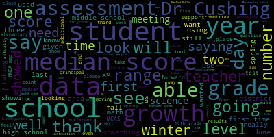
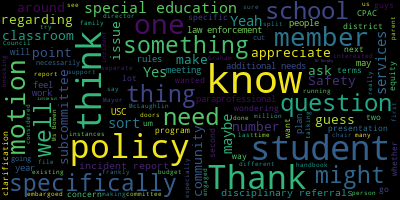
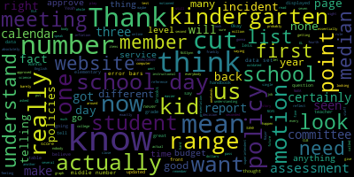
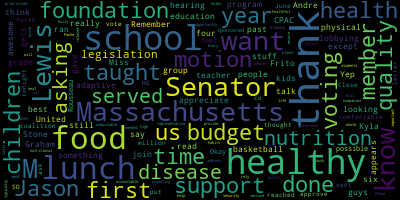
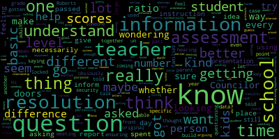

AI-generated transcript of School Committee Meeting June 13, 2022
English | español | português | 中国人 | kreyol ayisyen | tiếng việt | ខ្មែរ | русский | عربي | 한국인
Back to all transcripts
[Edouard-Vincent]: that the network was chosen from a total of 580 applicants. They plan on using this funding over the next two to five years in order to better connect with families in our community. I also wanted to recognize Mr. Tremonti's eighth grade class at the Hamptons Middle School. They shared their civics project with me. The students developed a banner which promotes As one of the quotes on the banner states, when we all give, all gain. The banner can be seen as one enters the foyer of the Andrews Middle School. and unfortunately they did lose three to two, but congratulations nonetheless. And likewise, the boys played Westside High School in West Springfield. And unfortunately they did lose as well with a 10 to five, but despite the losses, we are very proud of all of the spring sport athletes within Medford Public Schools. So again, those of you who are interested in sports, The fall sports season that's coming up the portal will be open, and you'll be able to register there. I wanted to also thank the class of 2020. This was the first graduating class that was impacted by COVID-19. This class could not celebrate their graduation with a prom, a barbecue, senior breakfast, and an in-person graduation ceremony. Despite missing all of this, they still wanted to leave something behind for future generations of Mustangs. Last Thursday, Mayor Rungelkorn, Dr. Cushing, Assistant Principal Bloch, the 2020 class advisors, Mr. Joseph Donlon and Mrs. Nancy Donlon, and the 2020 class president, Mark Allen Jean-Marie, and Class Secretary Elijah Fortune. They helped to unveil a beautiful Mustang statue. It's placed near the entrance to the Caron Theater. The plaque that accompanies this beautiful bust of a Mustang head says in recognition of the class of 2020 Medford High School Medford vocational technical high school. We remember your strength resilience and unending commitment to our school community. You so ably demonstrated the true meaning of Mustang spirit, setting an example for alumni and the many students to follow. Special thanks to Mr. Devaney of Oak Grove Memorials for designing the marble base that supports the bust and giving the school a significant discount. to have that bust displayed beautifully in the foyer area. So last week, we had the opportunity to enjoy some events that in the past we would have missed out on. We celebrated our Junior Olympics at Hormel Stadium with fifth graders. It was an absolutely beautiful day. Member Graham, Member McLaughlin, Mayor McLaughlin, Mayor Lungo-Koehn, Member McLaughlin. Our athletic department, our phys ed teachers, all of our elementary principals, the students, they had the opportunity to really participate in Olympic sports, run around, the teams were mixed up so they got to see new friends and people that they will be together with next year when they go to middle school. So there were a lot of parents PTO was actively involved, and it was truly a great event for all. I also wanted to say that last week we had a wonderful celebration at the new library. It was the elementary read-a-thon. And at last count, that read-a-thon raised over $31,000 from all of the four elementary schools. The students did an outstanding job reading. over two to three weeks. And I want to thank member Graham was there may along will Kern was there as well, recognizing our students giving them treats, and just thanking them for reading taking on that challenge, and not to let reading go by the wayside. I also want to thank the library staff for allowing us to use their beautiful facility. It was a wonderful event, recognizing students from pre-kinder all the way up through fifth grade. This week and next week are going to be moving on ceremonies for our eighth graders, for our fifth graders. So there are definitely a lot of moving on ceremonies that are coming up and we will have those specific dates posted. They'll be going out to the community. So depending on which school, they're all different dates, but it's a wonderful time of year.
[Graham]: I also want to. Superintendent, can I just stop you for a second? Yes, please. There is some confusion about the proper Zoom link. The one on our agenda is apparently not the Zoom link that we are in right now and there are people looking at the Zoom link on the agenda and waiting to get into that meeting. So, can we take a five-minute motion to recess?
[Lungo-Koehn]: Motion to take a two to five-minute recess until we figure this out, please. by Member McLaughlin, seconded by Member Graham. All those in favor? Aye. All those opposed? Let's get this together. Sorry, sorry, false alarm. You have another minute. Dr. Edouard-Vincent, let's finish up.
[Edouard-Vincent]: Sorry. The last piece that I said was that there will be multiple moving on ceremonies at both the fifth and eighth grades. Please look out for school-based communications so you can have the exact time and location at your respective schools. Um, we will be since this is the final regular meeting of the year. This is our last Monday of being in school before the school year lets out. We will have summer fun camp starting on July 5 at the miss a tuck. And then there will be plenty of clinics being offered this summer for any of our athletes volleyball girls lacrosse, basketball, soccer. So please go to the school blog to find out the information for that Medford rec and the Maldon why. At the GMAC gym, and the new Medford public library, they are hosting many summer events, so please take advantage of that as well look at their respective websites. I want to wish all of our dads out there a happy Father's Day, this coming Sunday, this coming Sunday. June 19. I also want to just remind everyone that June 19 is Juneteenth. It became a federal holiday last year. The name is the blending of the words June and 19th. It commemorates June 19th, 1865, the day that the Union Army Major General Gordon Granger rode into Galveston, Texas and told slaves of their emancipation. That day came more than two years after President Abraham Lincoln issued the Emancipation Proclamation on January 1st, 1863. even after Lincoln declared all enslaved people free on paper that hadn't necessarily been the case in practice. Juneteenth is also known as Emancipation Day, Jubilee Day, Freedom Day, and Black Independence Day. People across the country celebrate with food and festivities, much like the 4th of July. In celebration of Juneteenth, schools will be closed on Monday, June 20th. School will resume on Tuesday, the 21st, and our last day of school is Thursday, June 23rd. So as I said, this is our last regular school committee meeting of the year. We will be scheduling additional meetings, which we mentioned earlier. I especially want to thank all of our students and staff, as well as our school committee for another successful school year. I want to congratulate our educators and staff who are retiring this year. And since we are still finalizing details on this list, we will be individually recognizing all of our retirees at our first meeting officially in September. Thank you.
[Lungo-Koehn]: Thank you, Dr. Edward-Vincent. Number two, CPAC end of year report presented by Ms. Alex Lorick and Ms. Tanya Sullivan, co-chairs of the Special Education Parent Advisory Council. Welcome. Press the button, the second button in, or we can have Mr. McLaughlin turn that on for you. Thank you. Oh, there we go. There's the red light.
[Sullivan]: Good evening, Mayor, Superintendent, school committee members. Thanks for having us present at this meeting. Medford Special Education Parent Advisory Council. We've been busy this year. The presentation. Okay.
[Lungo-Koehn]: Sure.
[McLaughlin]: Mayor, while we're waiting for the presentation, can I ask a question?
[Lungo-Koehn]: Yes, I think Dr. Cushing is working on getting the presentation up. Member McLaughlin?
[McLaughlin]: Thank you. I'm just curious about how many students, and I suppose Ms. Bowen can answer, about how many students are receiving special education services in Medford Public Schools?
[O'Connor]: We have approximately 840 students who are receiving services. 840 out of the roughly 4,000? Yes. Okay, thank you.
[Lungo-Koehn]: Thank you. Perfect. Go to the next one.
[Sullivan]: So the CPAC board members consists of myself, Tanya Sullivan, Alex Lorik. We're both the co-chairs. Jamil Webb Davis is the treasurer. I believe she's going by Jamil Johnson now. Secretary is Anne Herzog Russo. The membership includes students, and it includes families and guardians of children on IEPs and 504s, and other interested parties. At Medford CPAC, we're always looking for parents, guardians of children with special needs, and other interested parties to join us and be a part of the community, to work with us even on a volunteer basis, to help us with some of the presentations and activities that we'd like to put on for the community. And if you'd like to learn more about how to get involved with Medford CPAC, please email us at medford.cpac at gmail.com. For those that don't know what Medford CPAC is, our mission, what is CPAC? The purpose is for us to fulfill the directive stated in Chapter 71B of the Massachusetts General Laws, which requires a school district to establish a PAC and assigns both an advisory and a participatory function to the PAC. In meeting this requirement, the mission of the Medford Special Education Parent Advisory Council is to advise the district on matters that pertain to the education and safety of students with disabilities by seeking input from the special education parent members. Meet regularly with school officials to participate in the planning, development, and evaluation of the school district's special education program to participate in planning workshops and activities as prioritized by the CPAC board. Even though we did most of our presentations, actually all of our presentations this year via Zoom, we were actually very successful in presenting a lot of great topics and we had a really good turnout. We do hope to go back to in-person for the next school year. But the 2021-2022 school year highlights We offered several content-rich presentations throughout the school year. Also, our presentations, when we have speakers qualify as two PDPs for teachers and staff, if they attend the presentation. And some of our topics included disability rights as human rights, understanding the IEP, understanding dyslexia, declarative language on and beyond the spectrum, And then to continue in collaboration with the special education department CPAC presentations have highlighted initiatives in the district, as well as Medford specialists and special education service providers. With the disability awareness initiatives in Medford public schools, and we had physical and occupational therapy district specialists present at the last presentation. And we plan to continue our close collaboration with the district and add more such presentations in the new year. CPAC concerns and recommendations. So the CPAC is focused on moving forward the disability awareness training for staff and the disability awareness curriculum for students in all schools. We are concerned that the 2021-2022 resulted in a pause of these initiatives. We hope the district recognizes the importance of these programs and is committed to their implementation. We are concerned on how staff shortages, special education teachers, and special education paraprofessionals impact our students with disabilities. We are further concerned regarding a shortage of substitute special education paraprofessionals, which impacts the ability to support students as specified in their IEPs. In addition, CPAC was made aware of school policies which allow for disciplinary referrals and incident reports to be added to a student file without parental notification. And just to clarify, it might be a misunderstanding or a miscommunication that's lending to that as well. These policies have the potential to disproportionately impact students with high needs and their families. We recommend the school committee strengthen the language of these policies and introduce unambiguous conditions that trigger parental notifications so that the parents will have the same information that the administration and the school has. And then we wanted to open up for any questions.
[McLaughlin]: Member McLaughlin. Thank you. Thank you for the presentation. I always appreciate it. I do have a couple of questions if I can. I wanted to ask, do you also advise and support parents or caregivers with questions regarding special education supports and services. Do you guys take phone calls or talk to families about any of those needs?
[Sullivan]: Yes. Um, we do talk to families separately and we are looking to, uh, next year open office hours, uh, so that families who may not be able to attend the meetings, um, will still be able to express their concerns, um, to the CPAC so that we can work with administration. to make sure that the community is getting what they need.
[McLaughlin]: Thank you. And next year is an election year, right? So yeah. So for people that are interested in running, what should they do or how can they participate if they're interested in supporting either the CPAC board or running for any of the positions or what have you? Is there a way to be involved?
[Sullivan]: Absolutely. They can reach out to us directly. They can either call us or they can email us at medford.cpac at gmail.com is probably the best way to get in touch with us. We are always looking to grow the CPAC. A lot of people are always busy, everybody's busy, but taking the time to become a part of this, we all became a part of this because we had a concern about our own child. And then when you get in, you realize that you can make a difference for a lot of children. And we would really appreciate any volunteers that can help in any capacity. It doesn't need to be every single meeting. It doesn't need to be every single event. But any, any volunteers would be greatly appreciated.
[McLaughlin]: Thank you. And again, you don't have to be a parent or a family member of a child with a disability, you can just be an interested party. May I may I just have two more? Yes. Yeah, thank you. I have three more actually. Sorry. One is the next one is on have you guys done I know that there's a programmatic elements to the special education department. So there are different strands, if you will, of classrooms, of sub-separate classrooms in our district. For example, an access program, connections program, therapeutic learning program, those sorts of things. I'm wondering, does the CPAC do tours of those programs, strands at all? Have you guys looked at, or are there tours available that you guys do do so that you're looking at the programmatic elements?
[Sullivan]: As CPAC, we haven't necessarily toured them, especially not in the last few years.
[McLaughlin]: I guess it's maybe a question for Ms. Bowen.
[Sullivan]: So, I mean, that is something that we're looking to do. We would like to be able to do that so that we can have a better understanding and a better kind of vision so that when we're telling parents information about these programs, we're speaking from experience. We're speaking from what we're seeing. We're speaking about what we know. as opposed to what we know on paper.
[McLaughlin]: And also the charter is to advise the district on matters pertaining to special education.
[Sullivan]: So you're seeing the classrooms and the environment and you can advise on what you're saying. Exactly. I mean, some of us have seen, have seen these classrooms as a parent, you know, observer, but in a capacity to kind of speak to, you know, outward facing community, we would definitely need to see all of them.
[McLaughlin]: Does that need to be a motion, Joan, or is that something that can
[O'Connor]: No, that's something we can arrange. We have had discussions prior to the school closure about having more students. So I think we'll revisit it when things calm down. Thank you. We'll be in communication regarding that.
[McLaughlin]: Thank you. And then if I can ask, I guess this is for Ms. Bowen, how do we address the issue, concern number two, the staff shortages? I know that it's COVID and this has been an issue across the country and I know that there's a lot of concern with Well, first of all, just having special education paraprofessionals, but also having a substitute pool for them, because in a lot of instances, or some instances paraprofessionals are specifically part of the child's IEP, whether it's one-on-one or a classroom para, and so it's a legal requirement, obviously, that we have those paraprofessionals. What's the plan to try to address that?
[O'Connor]: So that's the million dollar question. We are working really hard to recruit more staff members. It's been a struggle across all districts. They're experiencing the same shortages that we are. We're hoping with contract negotiations with the paraprofessionals, we wanna do more training with them as well to hope to get more paraprofessionals to come to the district. We are advertising everywhere. If people know someone who's interested in being a paraprofessional, please have them send in their resume to me, but we are constantly looking and using all platforms that we possibly can to hire and recruit.
[McLaughlin]: And I think just on the, and this might be a Mr. Murphy question sort of issue that was brought up, but I think on the paraprofessional, I was told, I think by a paraprofessional or someone, Um, that's, I think it's no longer with the district. If you are out sick, there's not an option for a substitute button or something like that.
[O'Connor]: I forget.
[McLaughlin]: Correct.
[O'Connor]: I mean, when, uh, when a power is absent, there's not, um, but we have created these open positions that when we know that there is a need for a power in one of our substant substantially separate programs or a student that requires, we are trying to get someone to cover that paraprofessional. So, It's moving pieces, but there's not a lot of staff that we're able to move around at this point.
[McLaughlin]: Maybe we can check in on that again mid-year or something next year. And then I promised my last question, colleagues. Thank you for indulging me. Actually, it's a motion. It's on your last recommendation regarding the incident and discipline reports that are created and put in students' files that can disproportionately impact students with high needs. I'd like to make a motion that this issue be referred to the Rules, Policy, and Equity Subcommittee to review. And I'm wondering if I might have a second for my, thank you.
[Lungo-Koehn]: Motion by Member McLaughlin, seconded by Member Mustone. All those in favor? Can I speak on that, actually? Before the roll is called, Member Ruseau.
[Ruseau]: Thank you, actually. My question was actually about that. Do you have you know, you reference policies, do you actually know what the policies are? Like, is there a list?
[YeIUKo9SmWU_SPEAKER_10]: So the policy is in the handbooks, the school handbooks, and I look at most of them, I look at elementary and middle school handbooks. First of all, when you go on the website, I think none of the school has the most current handout. They are called different way, different names. So it's the family handbook, it's the student handbook, it's the student and parents handbook. So that is confusing. And then most are two years old. I asked Mr. Tucci, so for the McGlynn Middle School, I have reviewed the latest just to make sure that there is not like a difference in language. But yeah, so I look at the handbooks that I don't know if there is any other rule. And the handbook says that referrals may result in pattern notification, but they don't have to result in pattern notification. And also there's the confusion regarding disciplinary referrals and incidents reports. The handbooks seem to suggest that the incident reports are only filed for like very serious offenses like drug issues or harassment. But in reality, it seems that It's not only that. So it's the language is very confusing. And then the issue itself, for me, at least what's very confusing.
[Ruseau]: Thank you, certainly. The issue of the handbooks being outdated in our website. I won't get into the website right now. But, um, so I think that I certainly support the motion. I just think that we need to know which policies we're reviewing, because I don't think it's appropriate to cast a net where the rules and policy subcommittee should essentially review the whole handbook, because the committee- Point of information. Approves the handbooks.
[Lungo-Koehn]: Point of information. Point of information. Your question, Member McLaughlin?
[McLaughlin]: Yeah, well, I guess it's more, not a question, but a clarification for the point of information is that- It's a point of clarification. Yeah, a point of clarification where you are asking specifically I am asking specifically that the policy for disciplinary referrals and incident reports allow for parental notification. So we can, I think it's our job to find out what the current policy is that exists in both our online policy and rules and policy handbook, as well as the student handbooks and make sure that those are consistent. But essentially I can speak from personal experience regarding incident reports. We had multiple that we were frankly unaware of until we were leaving the district and became aware of them. And that's not the way one wants to find out, especially when we want to support our students while they're in school. So the motion is specifically addressing a referral to the rules, policy and equity subcommittee to review disciplinary referrals and incident reports so that those are shared with parental notification. because that seems not to either be an existing policy in the current rules policy and equity listing and or some vagary in the student handbook. So that's my specific. Is that helpful? Mayor?
[Lungo-Koehn]: Before the roll call, Member Ruseau, are you all set? No, but I can wait. You'll yield to Member Graham?
[Graham]: I was wondering if the communication and family engagement subcommittee was the more appropriate committee to send this to, given that what we're talking about is parental communication. So just a suggestion that we find the right committee for it to go to.
[Lungo-Koehn]: May I respond? Member Ruseau will yield to you. Member McLaughlin.
[McLaughlin]: Thank you. I appreciate that through the chair, member Graham, that this is a family communication. It is also policy specifically regarding disciplinary referrals and incident reports, because those policies do go into the student file. So it's a policy in terms of what's in the file, not just the family engagement. So I think that there's a step that can be missed there if it's not part of policy. I know that I spoke with one of our administrators about what the existing policy is around the structure of this. have been told that there isn't one in terms of what the process is. So I think there's a couple of issues to be addressed, but I would say, I think it's the policy subcommittee because we really need to create a policy since there isn't one that exists.
[Ruseau]: Mayor.
[Lungo-Koehn]: Thank you. Member Ruseau.
[Ruseau]: Thank you. So I did find the incident reports policy, which I will admit, I did not know we had. And in fact, it does reference serious incidents, but what is fascinating about it is that nowhere in there, is there any suggestion that the family should be communicated with? So if we can, a friendly amendment to actually specify the particular policy, because I just don't wanna, I don't want a motion where it's like, I'm just hunting all the policies.
[McLaughlin]: No, that's agreed. You can include that. What's the policy number?
[Ruseau]: Policy CLB incident report.
[McLaughlin]: Say it again.
[Ruseau]: CLB is the policy ID. It's incident report.
[McLaughlin]: CLB incident reports. I will amend that to the motion.
[Lungo-Koehn]: Thank you. Should I read the motion? Sure. Oh, yes. Just want to make sure your microphone's on, please.
[YeIUKo9SmWU_SPEAKER_10]: So I just want to make sure that the issue is not only the incident report, but also the referral report, which seem to be different, the disciplinary referral, which is communication between staff. Yes. And may or may not have an incident report.
[Sullivan]: And the referral seems to be, it doesn't necessarily need to be with something, you know, very aggressive, but it seems to be the way that it's communicated throughout administration. It's almost like a, communication process more so than a like an incident report similar to an incident report. So it seems very different but sometimes those words are used interchangeably.
[YeIUKo9SmWU_SPEAKER_10]: And it does go in the student record.
[Lungo-Koehn]: Member McLaughlin?
[McLaughlin]: Yes and also you know just to make matters a little bit more confusing and I know the Director of Pupil Services knows this but not necessarily all educators know you know, that the disciplinary referrals for students with disabilities has some requirements and some structure. And so, especially regarding suspension and expulsion and some other issues. So there's some nuances around this. So if there is not an existing policy, it may be that this should go to the special education subcommittee first to think about what the nuances are around the disciplinary referrals, specific to the special education law and how that can be communicated. So if I can, if my colleagues are in agreement, I think I might split the motion.
[Lungo-Koehn]: Before you split the motion, I think Dr. Edouard-Vincent wants to comment.
[Edouard-Vincent]: Yeah, I just wanted to comment because as I'm listening to the conversation. I definitely am in support of visiting the incident reports in correcting the language for the disciplinary referrals piece. I'm not really clear in terms of what it is specifically that you're asking and I'm just thinking about. Is this something that's going to be putting an additional burden on the classroom teachers. If, if you know something that like a very minor infraction takes place in the classroom that it's it's documented but to say every single time. something happens that there's parent notification so I, I am in support of sending it to the subcommittee to try to unpack it and unpack it in terms of a reasonable way parents definitely are notified I know when there are serious infractions that take place, but I just don't want it to be something where it's something that's so minor and. It's, it's addressed but it ends up now being an additional demand in terms of students with disabilities member McLaughlin. We definitely work with building based special education administrators and. The administrators also know that there are special rules, different rules, rules for students with disabilities regarding suspension. So that is really on everyone's radar. And if in fact. discipline stronger discipline needs to be meted out, then we definitely consult with special education administrators, prior to that taking place. So I just wanted to say that it is something that we're aware of and miss Bowen is here she can speak to that as well. I just wanted to comment so that you're aware I am willing to, you know, address the incident reports and get the policy formally revised, but I am cautious about saying every single thing needs to be revised because we do need to document but not everything is worthy of, you know, a phone call calling the parent immediately. Cause it's, it's something else that we would be adding to the instructional day.
[McLaughlin]: Yeah. Member McLaughlin. Thank you. Thank you, superintendent. I just wanted to mention as well, though, that if the, if the document, even if it's a minor infraction, if it's going in the students, record and can affect the students placement potentially, among other things, then it does feel like it should be something that the parents are notified. But I think that this is a discussion, a longer discussion for another day. So if I might, I would like to split the motion so that We refer the incident report motion to the rules, the policy and equity subcommittee based on the policy DLB incidents that member Rousseau just mentioned. And then my second motion for the split would be that we refer disciplinary referrals to the special education subcommittee meeting to work a little bit more on the language and work with collaborate with the superintendent and director of pupil services to better understand why CPAC is specifically making this recommendation. If I could have a second.
[Lungo-Koehn]: Motion for approval by Member McLaughlin, seconded by Member Mustone. All those in favor? Aye. All those opposed? Motion passes. Member Mustone.
[Mustone]: I also want to just thank you all because I think it's been years that you were lobbying for the adaptive physical education teacher. And this past year has been awesome with the United basketball program that I know Miss Kyla Andre ran. And so I just want people to know that CPAC really gets stuff done and that if they're looking to get something done to join your group, because you guys are the best. So thank you for being here.
[Edouard-Vincent]: I just wanted to say thank you as well to CPAC for your continued partnership with Medford Public Schools, including us, notifying us of all of your meetings and giving us an opportunity to communicate more widely with the entire community. So thank you for that. And I look forward to our continued partnership moving next year.
[McLaughlin]: And I believe we have a presentation to a member of the community. Yes.
[Sullivan]: Every year we like to award a member of the community that makes a difference for our kids and the community basically. We awarded to a member in the community who for the current school year has embodied what it means to go above and beyond for our students and families. So I just wanted to read a little. I can't believe you need me to move closer to the microphone, but I will. As parents of a child with intellectual and developmental disabilities, it's always in our vision for our kids to eventually have meaningful employment, which provides them with confidence, a continued place in the community, all while teaching them skills that they can use in their everyday lives. It can be a struggle to make that happen or to even sometimes conceive what steps are needed to ensure that our kids get this experience. And we're grateful for parents who are so brave and who take the necessary steps to secure this for not only their children, but for other young adults as well. This is what Carol Nigro, with the help of many, including Michael Nigro, Heather McKinnon, Denise Desjardins, and of course Kelsey, and many others, has brought to life. What was once just a vision for her daughter is now an astounding reality at the Charlotte and William Bloomberg Medford Public Library with Chapters Coffee Cart. We urge you all to visit and frequent this business. And we would like to present, let me bring Carol up here, And we would like to present Carol the CPAC award this year for believing that she could, so she did. Yes.
[McLaughlin]: Can we get a picture with the school committee and Carol and CPAC? Would that be okay, Mayor?
[Lungo-Koehn]: Yes. And Carol, can you give chapters a plug? I know that's a long time coming. You've worked with the city, you've worked with CPAC, a number of us. You had a vision a long time ago and you even had to go through the procurement process with the city and you did it. And now you have our children up at the second floor in the library. So if you want to give it a plug, let us know where your hours are and make sure everybody stops by and grabs a cup of coffee.
[SPEAKER_14]: Well, first of all, we're thrilled and honored to be able to set up our first cart in Medford, and to be able to carry out our vision that inclusion works, and to share our model with other communities, to have them look at us in the Medford Public Library, and we hope that it will be a chain reaction into other cities. We're currently open Monday through Saturday, 9 to 3. And the rumor is that the coffee is really good. That's what we heard. Thank you, Mr. Coffee Roasters. So come in. Today was definitely an iced coffee day. And we'll have it ready for you. Wonderful. So come see us.
[Lungo-Koehn]: Great job. If the committee wants to come up and CPAC and Carol, your husband. Yep.
[O'Connor]: And Tanya leave. I just wanted to say a little thank you give you a little thank you for all your hard work as our co chairs for the last few years. I know you're shy. They give up so much of their free time. We meet on a monthly basis I'm sure they look forward to eight o'clock on a Friday morning with Joan Bowen. But we meet, we collaborate, we work for the students with disabilities in our community. And I wouldn't want to work with any other parents. You guys are the best. You are so collaborative.
[SPEAKER_17]: And I just wanted to say thank you from all the students.
[Lungo-Koehn]: Thank you. Thank you. Great presentation. We have approval of the 2022-2023 district calendar, Dr. Maurice-Edouard-Vincent, Superintendent. Motion for approval by Member Mustone, seconded by- Second. Member McLaughlin, I'm sure it'll be up on our website right after approval. All those in favor?
[Graham]: Mayor, can I just ask a couple quick questions? On the calendar, the dates in June 13, 14, 15, and 16, say noon dismissal, 6 to 12.
[Edouard-Vincent]: Linda's missing for secondary schools. Yeah, so the secondary schools are on a slightly different schedule than K five. So, for elementary schools they would have a regular school day. The last day of school would be at this point. If we have no snow days Friday, June 16, the first day this year Wednesday, August 31, so those three half days. Dr. Cushing, one clarifying question. On the 16th for secondary, on Friday, June 16th, 1130 dismissal for middle school, noon dismissal for elementary and high school. Thank you.
[Graham]: So, so my question is or my request is that at the bottom that the green be listed as tentative dates because those dates will move if there are snow days. Is that correct? Correct. Okay. Correct. If you're like me and you put all this stuff on your calendar last year when this came out, it just comes as a surprise to you this week that Thursday is in fact not a half day because the dates have shifted. So, if it can just be noted as tentative, so that people understand that there's, like, don't write this down and forget that you wrote it down. I think that would be helpful. And then my other question was whether the dates in yellow were all grades.
[Edouard-Vincent]: So the dates in yellow are noon dismissals, and we will not be having the early release for Oh, it's to be determined so it's still under negotiations, but the yellow dates. At this point in time would be for all grades, and then we are working on that early release day of Wednesdays, where we part of our proposal was for that not to exist anymore. So we're still negotiating that but this was the. in order to have additional professional development with staff.
[Lungo-Koehn]: It's yet to be determined. That's why it's not specified. Okay.
[Edouard-Vincent]: So we'll definitely add a notation, maybe put an asterisk or something on that last week saying that these attentive dates, you know, hoping that there are no snow days or inclement weather days that would require us. So this is not set in stone. 180 days is our obligation to be in school for students. So according to this calendar right now, June 16th is day 180 for our general education population.
[Graham]: Okay, so can we also make a note that the the noon dismissals in yellow just put something like tentative or pending. I know there's a lot still going on with this discussion. If we're going to put out a calendar, we're going to create questions if we can't be clear. So I think we just need to be able to tell people what is tentative or pending. And then I do think we need to commit to like resolving this particular issue as quickly as possible. Because while high school students can go home by themselves, if we're going to impact kindergartners, they can't. Yes. And we need to make sure that parents have adequate time to plan. Okay, thank you. Thank you, Member Graham, Member McLaughlin.
[McLaughlin]: Yes, thank you, I just wanted to say thanks for all the hard work that went into this whoever put this together did a nice job and also I think it's been addressed through. The Chair and Member Graham, but just to clarify that the the early release days and what have you are still in negotiation and those need to be marked as tentative until they're finalized in negotiation.
[Lungo-Koehn]: Yeah, okay. Thank you. Member Ruseau, unless you want to yield.
[Ruseau]: I just want to quickly, can we have the back page updated to reflect the policy that we actually have on our website on the MASC page? There are several things, several items in here, which are not marked as no school days, but in fact are no school days on the policy, on the policy manual online. I went through each of them and thankfully none of them impact, none of them are occurring on a school day. So, you know, Eid al-Adha is a no school day. They're all on the website. Just use the list on the website, which is correct. There are three no school days that we approved. They are all on weekends. So it's not gonna affect us, but I want this back page to reflect the actual policy of the school committee. Right, yeah, we have these little ends for no school days and how we'll play it forward. But three items on here do not say they're no school days when they in fact are no school days. It just happened to land on weekends or in July. So I just don't want, I've seen this one circulated a few times in this quarter as we've tried to work this out. And I'm like, that's not the right one. The right one's on the website. So thank you.
[Lungo-Koehn]: Thank you. Name and address for the record.
[Joanne McKay]: Hi, Joanne McKay, 35 Court Street, Metro Mass Roberts School. I'm here tonight to discuss our concerns with the calendar. Thank you, Member Graham, for addressing that because that's what we're here for. So Mr. Murphy shared the calendar with the union prior to tonight's meeting, and we did find some errors on the calendar that we pointed out that seemed to have been fixed. However, the one issue that we are a little unhappy about is the concern about the Wednesday early release. As part of negotiations with administration, administration has asked that Wednesday's early release be changed to a full day and we are in discussions with that. We realize the importance of it. The teachers understand that a full day is something that is very important and we are working with administration about this. However, it is not finalized. Our contract is not has not been ratified. We don't have a tentative agreement on it. It's just something that we are in discussions despite the value we see in it. we do not feel it should be on the calendar. Now we pointed this out, the other changes were made. The prior calendar has a little, the yellow symbol said six to 12. It also had a white box that said elementary was early release. And what we're wondering is if someone can speak to the legality of passing a calendar that has changes that have not been agreed upon by a ratified contract, putting a little thing that says to be determined we're going to have to change the calendar. In our opinion is just. It's not satisfactory to us. It's not acceptable because it if it doesn't get ratified by next year. It looks bad on the teachers. Because then the this is something that we are discussing and we find great value in. Unfortunately, it hasn't been ratified right now. So we're asking that it not be put on the calendar that way, because it is misleading to parents. And for parents who do not understand the calendar, new parents, kindergarten parents, preschool parents, they're going to think it's a full day. And it's going to be difficult for them for child care if it does not get ratified before the start of the school. So we respectfully ask you not to pass the calendar. that is not specific enough for parents, that is not ratified by our contract. Thank you.
[SPEAKER_17]: Thank you.
[Ruseau]: Mayor.
[Joanne McKay]: Mayor.
[Lungo-Koehn]: Member Russell.
[Ruseau]: Thank you. I certainly understand the concerns. I believe this body is required to pass a calendar and this is our last meeting. So if we don't pass a calendar at all, there is no first day of school.
[Lungo-Koehn]: Mr. Murphy?
[Murphy]: No, I'm happy. And professional. The calendar doesn't specify whether there are early release days on Wednesdays or not, because as was just stated, that issue hasn't been determined yet. If the contract in the school year 22-23 has early release days, despite, as we've just heard, the acknowledgement it's not what's best for students, then we will have early release days. If it's not in the contract, then we will have full school days in the interest of students. This calendar, as the union was told at the end of last week, is designed to provide the flexibility that both parties would presumably want pending the outcome of those negotiations. It doesn't say what grade levels are going to have half days, because we don't know what grade levels are going to have half days. Although, frankly, that wouldn't be a matter for the contract if the administration decided that those were half days for students, just like if they decided it was cancel, cancel, cancel days, then that's what would occur. There's nothing misleading about this calendar and the pieces of information that were in the previous calendars are not there because as was stated, it's something that's currently being negotiated. I think what's going to be more confusing is we have, if we have to continually publish new calendars, but what I'm more disheartened by is that when the calendar was provided to the union and the opportunity for questions was raised. the questions that came, all the questions were answered. We weren't told that there would be an attempt to upend the school committee's work this evening. And I find that disappointing.
[SPEAKER_17]: Thank you.
[Lungo-Koehn]: Thank you, Mr. Murphy. Is there a motion on the floor?
[Joanne McKay]: Hi, we're not trying to upend anything. We saw the calendar prior to coming here and we looked at it and we said, oh, that change wasn't reflected. And then we came, we were actually in a meeting and then we came and said, let's speak to it so that we could have clarification. We're not trying to cause a problem. We're trying to stop a problem because we know how hard childcare is. You see all over Medford Moms, how hard childcare is for these parents. And this could be confusing. And if it is not established before the start of the school next year, it's going to be a big problem. That's why we're here. We're not here to upend anything. I just want to let that be known. Thank you.
[Lungo-Koehn]: Member Ruseau.
[Ruseau]: We have somebody who wishes to speak online, I believe. Yes, Charlene.
[Reporter 1]: Hi, can you all hear me? Can everyone hear me? I'm not sure. Yes, we can. Okay, thank you so much, Mayor. Charlene Douglas, president of the Method Teacher Association. So I just want to be very clear. here that we are in the midst of negotiations. We do not have an issue with the Wednesdays. And one of the things we work diligently on is talking about this, but we don't have a settled contract. We put this out, what are the legal ramifications to this calendar and to the district? What we're asking you to do is just to stay as of right now, We, you know, tentative, you know, parents, are they going to really understand that? Just put out the calendar as to what it is for now, but that we're still under the present contract. And our present contract states that it is a one 30 dismissal for elementary students. So I am very unclear as to what, you know, that, that issue is because it is. And I, my understanding is do we, we can't put something out there that hasn't been ratified. And I think we're even looking here and I'm sorry, I don't have my MTA rep on here, but something that's not negotiated, something that hasn't been ratified by the members, I believe, you know, and there's a pretense of the understanding that, oh yeah, this is going to go through, but we don't have any of that. Okay. Are we looking at an unfair labor practice? What are we looking at here? And I don't even want to use that term, But I know that my membership would be very upset when they see that and parents are going to be confused. I think for the best interest of the students, for childcare, for parents, is that we make sure they understand what this calendar really truly represents. Thank you. Any questions, I'll gladly answer.
[Lungo-Koehn]: Thank you.
[Graham]: Mayor. In past calendars, at least I think this is true, there were start and end times somewhere present on the physical calendar. So elementary starts at whatever the time is, middle school starts at whatever the time is. One solution that I think would be the most clear for parents who are not in the thick of union negotiations is to post school end times with a Wednesday end time of TBD. So that it's clear that on Monday, Tuesday, Thursday, and Friday, elementary school students are going to get out at 235 and that they need to seek additional information from us at some point in time about the end time for Wednesdays. And I think that sufficiently tells people that this is a work in progress. But ultimately, you know, we do have to do that. And the other thing I want to point out is that the school committee did pass a policy that this calendar would be issued in November so that people could plan and obviously negotiation years sort of exacerbate these kinds of things that are otherwise simple to accomplish year after year. But hopefully we can get on a better schedule for the next school year.
[Lungo-Koehn]: Thank you, Member Graham. So is that a motion? We've already passed it, so is that a motion to adjust the language on the front cover for now?
[Graham]: Yeah, motion to add school start and end times to the official calendar and notes that Wednesdays are TBD for elementary.
[Lungo-Koehn]: Second. Motion for approval by Member Graham, seconded by Member McLaughlin. All those in favor? Aye. All those opposed? Motion passes. update on Medford Public Schools security protocol, Dr. Maurice-Edouard-Vincent, Superintendent, and Dr. Peter Cushing, Assistant Superintendent.
[Edouard-Vincent]: So good evening. This presentation was also in response to a request, community request, to just Let us share some of the key, key pieces that we are allowed to share to say what Medford Public Schools is doing in support of our safety and security measures.
[Cushing]: make you aware that the planning and training that we're talking about are critical. Metro Public Schools engages with about 5,000 plus individuals on a daily basis, including all of our students, staff, people who approach our schools in our close-knit urban community. And that requires a certain degree of preparedness. to make sure that we're ready. The plans that we're going to speak about today are largely confidential as they represent the safety and security planning that is essentially our playbook and any compromise of that would be a compromise of the safety and security of our faculty and students and all other members of our community. Regardless of that, what I do want to say is that we have an approach to really look at prevention, planning, and preparedness. So starting with the classroom, the ability for classroom educators, the ability for classroom paraprofessionals, for anyone on the staff to build relationships and connect with our students so that they know a student and they know when something might be a little bit different or something might be a little bit off, that then we can have and interaction with them that may be above and beyond. But social emotional learning in the classroom is really about having students achieve personal and collective goals with their peers, feel and show empathy for others, and establish and maintain supportive relationships while making those responsible decisions. So we've seen the castle wheel numerous times throughout this year for social emotional learning in the classroom. Today, I'm not going to talk so much about the wheel as I'm going to talk about those rings around it, that classroom, those schools, families, caregivers, and communities. So really, classrooms built on SEL offer an ecosystem for that prevention aspect, for us to be building relationships with students. And that type of prevention and preparedness is the best type of response for any type of incident. Our coaches and club advisors are also critical to supporting above and beyond. So that's just the first aspect. We have a robust counseling and behavioral health services program. Um, we have, um, clinical social workers, your traditional school guidance Councilors, uh, BCBAs school psychologists who work in concert and support with, uh, our school nurse nurses and school leaders, school leaders being members of the central leadership team, school principals, school assistant principals. Those relationships are more than just discipline. It's about educators in the leadership ranks, making those important connections with students. So once again, they're aware when a student may be acting differently, may need extra support, may need help, or that there may be a trigger for something. Counseling team provides this interconnected web of support for students. And we believe that students should be known by a member of the counseling team so that there's an interaction connection. Adjustment Councilors. What is an adjustment Councilor? An adjustment Councilor is a clinically trained social worker. This might be an LICSW, an LCSW, an LMHC, or any other number of people who have received clinical training to really support our students. We are currently working towards the one to 250 ratio that was mentioned by Mr. Anderson last week in his public comment. Um, right now, uh, I believe that we are really striving towards that at the Brooks, the McGlynn elementary and the Roberts as well. Um, and we are close on those. I don't have the exact ratios here with me today, but we are close on those. Uh, adjustment and Councilors also provide a level of intervention to support students. And so communication with families when incidents occur. And interestingly enough, one of the things that we will be working on this summer in conjunction now with the rules, policy and equity subcommittee is reviewing and revising as necessary, the insert recording framework. So parents and caregivers are aware and can partner with the schools. And it was printed before press time. Um, so, uh, just wanted to make you aware of that, um, that that was on our slate to really do this year. Threat assessment. So I will not give you an open session, the exact program that we use. It is a very scripted and form-driven and procedural threat assessment process. I received training in it pre-pandemic, which while that was only in November of 2019, it feels like it may have been in 1970 because of just all the events of the past few years. So this is an approach to institute violence prevention through problem solving with students. It involves assessment and intervention with students who have threatened violence in some manner. This is a standardized process that has been deployed across the district and we'll be working with the appropriate staff this year to provide a refresher that once again was delayed by the events of the pandemic and all the other things that had to be done, but this will be provided this year as we re-enter the school year. So some more specific threat guidelines. These are embargoed as part of our hazard safety and security plans. The threat assessment includes the following identification by concerned members of the community, evaluation by the trained team, and then intervention by the trained team or outside providers in support of the school and the child. This is really about getting the child as much help as possible, as much support as possible. And while some people may at times think, oh my God, a threat assessment, is that an overreaction? I would argue that we no longer live in a world where threats are ever greeted with an overreaction. Given situations that we've seen in our country, our school and partnering personnel need to respond appropriately in each individual situation to make sure that safety for all of our community members is really there. And then again, going back to that incident reporting, that there's family caregiver follow-up so that they're on board. And if they may not necessarily be on board, that we're working with them to come to a place of collaboration and hopefully agreement. So hazard safety and security planning. This is really what you would think about the actionable steps to train faculty and staff to respond once an incident or situation has occurred. This is when everything else we have done for preparedness and prevention may have not necessarily been successful and realize that there will be certain things that we simply cannot plan for. and to respond similarly across different buildings and situations. So right now, actually working with the Mayor's Chief of Staff to form the Municipal Safety Council to bring those people together for the benefit of the Medford Public Schools, and are also working to form our first Medford Public Schools Leadership Safety Council, at least before pre-pandemic times.
[Edouard-Vincent]: In addition to the Municipal Safety Council and the Medford Public Schools Leadership Safety Council, we also have a universal safety committee, which meets monthly, and it has a CPAC representative, our Director of Pupil Services attends those meetings, a school committee representative, Special education coordinators are part of that. High school principals, middle school principals, and elementary school principals are also part of the safety committee taking into account all of our populations within the school community when emergency situations may arise. Questions?
[Cushing]: Our next slide, so we're right now working with numerous stakeholders to construct an emergency operations slash immediate response plan that will provide those standardized responses across situations. They will also provide various critical pieces of information for each school as relates to locations, telephone numbers, various things along those lines that are part of your traditional emergency response plan. Please do not think that this is an exhaustive list. It is pretty comprehensive, but it's not an exhaustive list. While we were working on this initially pre-pandemic in February of pre-pandemic time, I think we added about 15 things to an existing protocol that we are going to flesh out and build. We're also going to create an appendix of letters that serve as a guide for school leaders to notify the community. In the last several weeks, if you're a member of our middle schools, parents have received communications, and that's all in an effort to be transparent and to provide as much up-to-date information as necessary. And so for areas for growth, so we're continually examining our protocols and structures for school safety. So a couple of things following two years, it's really about getting back to some staff training, training all staff to be vigilant with door security and to pose these and other questions. So do we leave? Do we shelter in place? What are the alternate means of egress? Are windows an option? These actually all come from a memo from, uh, the state fire marshal on, uh, emergency fire drills and other drills along that line. Um, how do we inform, uh, leaders and others when there is a situation that they may not be aware of within the building? Building walkthroughs with Metro Police and Fire are currently being scheduled. I had a conversation today with Office of the O'Growth, through Office of the O'Growth with the Chief, to provide a comprehensive assessment of our readiness. And finally, review the security infrastructure and cost estimates for enhancements in two specific areas, security cameras and exterior door access.
[Hays]: Hi, yes, thank you for this. I mean, it's a lot of information. And we appreciate you putting them all together. I have a few questions. Just I know, obviously, the questions we're getting these days from families and have been getting is based on what we're learning in the moment about what happened in Uvalde and some of the issues that are coming up that they found were problematic, the reasons why the shooter was able to get in, why maybe no one knew that this person was clearly in trouble and needed help. So a couple of questions I have when I look at, you said that 1 to 250 ratio that we're getting close to that. I seem to recall an earlier meeting this year where I thought we were told that we were at that, and I don't know if we're talking about different numbers and different because I know there's adjustment Councilors, there's guidance Councilors, there's all different forms, but I know at some point there was that one to 250 ratio and I thought we were told that we were at that and maybe even a little better than that. So I'm curious if that's a different number or why I'm hearing a difference now that I feel like I'm hearing a difference.
[Cushing]: So we are there at the middle schools and high school and we are definitely working towards that. Um, they're in the budget, and to bring those up to speed. So I can't honestly remember the specifics of the meeting you're referencing at this time, but I do know that we are working towards that, and that if you were to consider, this is specifically for adjustment Councilors, but if you were to consider all counseling staff, I would go out on a limb and say that we are definitely there, but realize I'm on a limb
[Hays]: okay and then I'm wondering too so um another thing that they've definitely talked about is um and this would also get to the staffing ratios or how we I honestly don't know how we go about doing this but you know that that a key a key thing to have is to try to make sure that every student has one adult who they are in contact with or who is kind of there watching them in a way or has a relationship with them, that schools try to build that into their structure. Whether it's the teacher, whether it's a Councilor, whether it's a club advisor, are we in any way looking at how we could try to systematically build that in? I know we've got large numbers of kids, but And I know that that's something that seems to come up with every one of these school shootings saying that this was a person who was kind of on the fringes and wasn't being watched or was didn't have an adult that was. And I think, in this case, obviously, we've all did it was already out of school, so if that wouldn't change the school setting but. In some cases, for kids who've been in school, it does.
[Cushing]: I think one of the things that Medford has done over the past 12 months in bringing on board the re-engagement specialists adds an additional layer of support to really focus on those students who may be not traditionally connecting, as well as to make sure that our classroom teachers Unfortunately, students who may not be connecting, generally speaking, don't involve in clubs, activities, sports. And I know teachers who frequently will have conversations with students to get them engaged, try to get them to a club, try to get them to a sport or whatever else it may be. But I think that with what Medford has done with the re-engagement specialists and the hub to also converse about students in need is one way that we can do that. We're also talking about revamping how big advisory groups are at the high school so that we can have smaller groups with more adults involved so that students can have that sense of connection and maintain that connection throughout their four years, at least at the high school.
[Hays]: I have some other basic questions, but I think other people.
[SPEAKER_14]: I'll let others go if someone else wanted to ask some questions.
[Lungo-Koehn]: Member McLaughlin and then Member Hays can have a floor back. So thank you.
[McLaughlin]: Thank you, Dr. Cushon for the report and thank you for including an incident process on the report as well. That was nice to see and the synchronicity was good to see. I have a question on the Municipal Safety Council and the MPS Leadership Safety Council. In both of those instances, I was wondering if I might make a friendly suggestion or if it's been considered that there's some sort of community representative there that is, you know, also that we're considering diversity. I'm sure we're considering diversity in the high school, middle school, and elementary school representatives, and I don't know if that's where you're factoring families in or if you're thinking about students for those. So I wanted a little bit of clarification of where community involvement can be engaged in those.
[Cushing]: So unfortunately, this is not an opportunity for community involvement.
[McLaughlin]: Because it's embargoed?
[Cushing]: Say again?
[McLaughlin]: Because it's embargoed?
[Cushing]: Because these are the, like, these are the highest level of security plans that the district has. And I fully respect the call for community involvement on most things. But I want to make sure that our students, staff, and those who come to our schools on a daily basis are safe and secure.
[McLaughlin]: Yes.
[Cushing]: And, um, while there are many trusted members of the community, um, who I look to seek, um, their input on various things, I, I don't necessarily, and I'll have, I'll be happy to bring this up with the chief and other members, uh, when it comes. So I don't want you to think it's a, it's a no outright. Um, however, this is, um, You know, in Maslow's hierarchy, you know, in order to reach the fulfillment stage, you gotta make sure that you're safe and you're secure. And I take this to be extraordinarily important work, and I wanna make sure that the other people who will serve on these committees are okay with saying that that's a possibility.
[McLaughlin]: I can appreciate that, and I can certainly appreciate that, you know, top secret nature, if you will, of the plans and making sure that that kept that's kept internal. So I guess the other thing I would ask is about quarterly meetings with the USC, the Universal Safety Committee. So not necessarily regarding the embargoed material, but more specific to the students with additional needs. So also going down to your next, um, uh, quadrant where you have a number of the different things that would be considered by these, um, by these councils, I would suggest adding slide 12.
[Cushing]: What would that be? Slide 12.
[McLaughlin]: I would suggest adding, uh, students with additional needs, um, here because there's a lot, that the USC has considered, specifically around physical needs? Do we have the stretchers that we need if a person's not able to be mobile? How do we get them out? How many are there? Where are the classrooms located? Are they near the stairs? Those kinds of things. Does law enforcement know where the classrooms that have substantially separate students with additional needs? a substantially separate classroom so that they have access to those, they know where those are. And also the autism training that the law enforcement currently does. So I forget his name, the law enforcement officer who's currently running the autism training for law enforcement, but I would really recommend that that goes underneath the students with additional needs aspect as well. As we've been playing out different scenarios in the universal safety committee, one might imagine, for example, you know, a horrible situation in the school something's happening. And one of the students is in the bathroom, maybe as a student with, you know, a disability, you know, with a need or whatever, and, and heads towards the law enforcement personnel, because they have an uncle who's a police officer. And, you know, they're wondering if they might know them or any number of things, right? How does one recognize that that could be a student that has some additional needs, doesn't know that like, so we have to think about that in terms of the planning as well. So the USC has done some of that work. But I would highly encourage that those items be added to that specific category with some subcategories be added to the security hazard safety and security planning that you're talking about. And maybe quarterly meeting with the USC or members of the USC that you feel are appropriate in terms of the privacy concerns. And then lastly, I guess I would just ask for some sort of professional maybe, I don't know, not development, but some sort of maybe meeting or something like that, that addresses the community. So maybe it's an annual event where it's at, you know, the theater or something, but somewhere where the community does feel like they're engaged and involved in this, not necessarily around plans specifically, but around addressing, you know, safety and school concerns. And, you know, it can include a panel where people are talking or, you know, movie that sort of addresses or some experts or something, but some way in which the community can feel engaged on this on an annual basis. So those are my questions slash comments.
[Cushing]: Yeah, I'm appreciate it. I appreciate those. Well, happy to bring them to the larger group when we meet.
[Lungo-Koehn]: Member Hays, do you have another question? And then Member Ruseau? We had somebody online. Okay, Member Hays, and then we'll go to
[Hays]: Yeah, I was just wondering if at some point we could also just go over, I think, you know, again, parent letters that we've gotten have also been questioning kind of at a more basic level, you know, things like the intercom systems at the doors. They're not necessarily consistently used at every school to let someone in. I know that some schools have a, such as the one I'm at, the Roberts, you know, there is a person sitting at a front desk. I understand that the security cameras, but you know, the question we've gotten is, but by the time you let someone in, you know, that's, that, that doesn't help, you know? So, so if you, if you're not questioning who's coming in and why, you know, that seems like a pretty basic safety thing that could be in place. Questions about, you know, are, do we have a way of ensuring that, Doors that go to the outside once the kids are in in the morning, are they locked? I did notice somebody the other day at the Roberts again, going around and checking doors just to make sure they were locked. Just are there actual protocols in place for ensuring that these things happen? I think some of those for the community, some of those kind of basic things would be as much a sense of security as some of these higher level things that are important too, but just that idea of What are some of the basic things at each school that are in place each day that ensure the kids are safe in their school, you know?
[Cushing]: And we can make sure that we update you on all of those. But also, you know, want to make sure that you know that we have all communicated with our principals to make sure that they're informing staff, like somebody runs out to the car quick and may want to prop open a door or something along those lines. that that's not acceptable. That's a piece of concrete about that big could disable the best security system in the world if it's propped in the appropriate location. And so the important thing is for all of our staff to remain vigilant, for our parents to remain vigilant. If they see something, say something. And, you know, to help be part of the solution. And the best way to do that is if somebody does see something to first contact the school principal. The school principal or assistant principal are the best people to go to for immediate action and immediate rectification of anything that someone may see. But we are working also to make sure that all of our staff are trained on the proper entry procedures to access the buildings and for them to state who they are, their purpose for being there, and who they are there to see.
[Lungo-Koehn]: Thank you, we have somebody on Zoom, an Adam that would like to speak. Name and address for the record, please.
[Healy]: Hi, Jessica Haley, Full Off Road. I just have a question or comment about having like police officers every day at each school or like adopting the guardian program that Florida has in place. have we looked into anything like that? Because my son's school, I noticed after the tragedy in Uvalde, there were officers at the school at drop off and pick up, but that lasted for two days. So obviously we thought we needed them there, but for two days and then they're gone. Also with the doors being opened during the day, a year or two ago, someone, did get into my son's school. Thankfully he wasn't armed or anything like that, but when kids were coming in from recess, he did get in and they would have been known there to do anything to protect the kids. So I'm just wondering, are we thinking on anything on those lines of protecting our schools in that way? Thank you.
[Cushing]: So the Medford police and the Medford public schools have a very strong relationship. But there's significant debate around how many officers should be in schools. And while it provides safety and security, and I've had tremendous luck working with all the school resource officers in my career who The seven or eight of them have been nothing short of phenomenal and built real relationships and have been coaches, club advisors, those types of things. I do know that there are also staffing challenges in that area and the ability to provide what would essentially be eight resource officers might be a challenge across all the schools. I think that I want to go back to, and I appreciate your comments, that the most important thing is for all staff to remain vigilant, to make sure that doors are closed, make sure that doors are locked, make sure that first floor windows are closed and locked. Those types of things are extremely critical to the safety and security of our students and staff.
[Lungo-Koehn]: Thank you, Dr. Cushing. Motion to receive and place on file. by member Stone, seconded by member Hays. All those in favor. Thank you so much, Dr. Cushing. We have an update on implementation of the NWEA map by Dr. Marice Edouard-Vincent, our superintendent.
[Edouard-Vincent]: Just waiting a moment for the slide deck to be pulled up. So I'm here this evening to present the update on the implementation of our first full administration of the NWEA map assessment system. NWEA standing for Northwest Evaluation Association. So as I begin my remarks, I wanted to say that Having NWEA math growth assessment right now in Medford Public Schools, that the first purpose of the assessment system is to be a diagnostic tool for us to be able to make data-informed decisions about what's taking place in all of our schools. And so in order to create a data-informed culture, it is important to consider that data is to be used for instructional improvement. This data that will be presented today is based upon growth and it is by nature very, very dynamic. It is not a fixed number. We should also consider and remember that we're thinking about the whole child, that data is not fate for any individual child, classroom or school. Like a map, it is an opportunity to see where we are in relation to where we want to go. So let us tread cautiously upon how we interpret the data that I'm going to share with you this evening. So as we look at this data, I have two protocols that are in front of you. The arrow says that we collect data points We assess and make meaning of the data, and then we adjust our practice. The image on the right shows the data-wise ladder of inference. And so you have data, you interpret the data, you draw conclusions, and the final step is you always take action and we begin the cycle over and over again. Here, the image on the left is an iceberg. An iceberg is something where you can only really see the top of it. So as we're looking at this data, the hard number is the tip of the iceberg that we can actually see. We don't see all of the other components that are beneath the water. And so that's why I said a little earlier that we're talking about the whole child. So again, we're not taking this data point to define a child exclusively by a number, but to be able to say that this is just one point of many points as we work with children and think about the learning of the whole child. So these are a few summary of actions of things that we've been doing working with data analysis. This year, we had professional development, with all of our teachers for NWEA MAP training for them to understand what the test was going to be like and how to use this new tool. Also this year, administrative meetings focused on data analysis. We also use the preliminary baseline data for NWEA map. And this professional development took place with principals, directors, and coordinators. And Dr. Carmen Williams was also part of the body of research that she worked on. But during these professional development meetings, we developed a common language. We talked specifically about data analysis and the importance of triangulation of data. I have inside a document. that was used, Dr. Cushing, are you able to just click on that? Can you go back one, please? Can you click on the example of data analysis conclusions that this happens on some levels within department meetings where the educators are looking at Where are the areas of success? Where are the areas that we need to revisit? And this is just one hard copy of an example of how teachers are looking at data and using their data to inform their instruction and to inform next steps. Thank you, Dr. Cushing. Can you revert back to the slide deck, please? Coherence. So this work with NWEAMAP, we finally have one assessment system that's being used in all of our eight schools. Every building is using the assessment. It's the same exact assessment being used district wide. So we are able to compare data and look at how students are demonstrating growth with the content that is being covered. Again, I talked a little bit about the slide deck, the sheet that we just showed you showed the stoplight activity. These are the types of questions that teachers and principals, administrators, curriculum directors are asking their teachers as they look at data. What do they notice and wonder? the single loop, double loop learning, and stoplight activity. All of these activities, again, are happening at all different levels across the district. Dr. Cushing? The spotlight activity Red, what can we stop doing because we don't have evidence that it is effective? Yellow, what do we need to adjust and or consider an alternative way? And green, what do we need to continue doing because it is working? So as I get ready, Dr. Cushing, thank you. As I get ready to show the hard data for the district, I wanted to just bring up some relevant vocabulary. We're going to be talking about the RIT median score. When you see the words or the letters RIT, it's the rash interval unit scale. It's named after a Danish mathematician, George Lash. The RIT scale is a stable scale, like feet and inches, that accurately measures student performance regardless of age, grades, or grade level. Like marking height on a growth chart and being able to see how tall your child is at various points in time, you can also see how much they have grown between tests. You can use this height analogy when explaining RIT, the RIT process, to students as well. The higher the RIT score, the more achievement the student has in the subject. The student's percentile ranking in conditional growth percentile can show how much the student has achieved in comparison with their peers. Dr. Cushing. There's a few other vocabulary words that I just wanted to highlight. We're going to be sharing the median score today. The median score is the middle number of a data set. It separates the upper half of a data set from the lower half. The mean is the same as the average value of a data set and is found using a calculation by adding up all of the numbers and dividing that number, dividing by the number of numbers in the data set. And the mode is the number in a data set that occurs most frequently. You'll also see CCR, which is talking about college and career readiness. We're going to begin with our science benchmarks. I'm really pleased to report to the committee that this purple band in the middle, which says NWEA median score, it's at the 50th percentile, that the majority of our performance as a district was above the median score listed. which on the left-hand side shows higher achievement, lower achievement, where that little arrow is. So science was given two times this year. We're showing the data for third grade, The median score was 188, and in the winter when our score was given, our range was, our first number ranged from 191 to 199. Dr. Kirshen, you can go forward to, thank you, third, fourth, and fifth grade. So the median score that we were looking for in third grade was 188. At all four elementary schools, the range that was shown, we exceeded that median score. In fourth grade, the median score was 195. In all elementary schools, we exceeded 195, the 50th percentile, we were above that score. In fifth grade, the median score was 200, and our range was from 203 to 208 in the winter administration of the science. At the elementary level, all of our elementary schools were above the non-referenced median score. Again, it's nationally normed, so we are at or above the nationally normed reference. Dr. Cushing, thank you. For grade six, the median score was 204. and our range was between 203, our lowest score, and 206. So the three numbers that are showing shows you the range of scores within the school, 206, 207, 208, 203, 204, 205, but the median score was 204. In grade seven, The median score was 207, and we were above that at 208 and 214. In the eighth grade, the median score was 210. We were at 216 and 210, respectively, hitting the median percentile. For high school, Dr. Cushing? The median score was 211 for ninth grade, and we were at 217. In 10th grade, the median score was 213, and we were at 219 as our lowest score. Our summary of science is as follows. that we were able to show growth, and again, this was a diagnostic tool at all levels, and we showed even greater growth between the winter and spring assessments that took place for grades three through eight. There was limited growth at grade six, but this again is the first time when we get to the secondary level that our sixth graders end up having a science, an individualized science teacher. So that was one area where we saw a slight adjustment. Dr. Cushing, we can move forward to math. In math, this is a similar scale. Yes, Dr. Cushing. Yes, Member Ursula.
[Ruseau]: Thank you. I still don't know what the three numbers on each.
[Edouard-Vincent]: So the three numbers are the range of scores that were administered in that. So all the scores fell between, Dr. Cushing, you can leave it right here. So grade 10, the winter range of scores At the high school, we fell between 219 and 221.
[Ruseau]: Are you saying that every student that took the test got 219, 220, or 221?
[Edouard-Vincent]: So this was the average. So they broke it out by individualized tests. And then when we pulled a specific report to say 10th grade, which is where I'm meeting right now, what was the range? It was 219 to 221 in the fall, in the winter. And then in the spring, we were 220 to 222. So there was small growth, but there was positive growth.
[Ruseau]: So I understand ranges. I just, I've never seen ranges displayed with three numbers or ranges like your 20 to 30 or your, there's never a middle number in a range as I've ever seen it. So I don't, this middle number, I mean, if you took all those middle numbers out, we would all be on exactly the same page that between 217 and 219 is 218. I don't think I'm fine.
[Edouard-Vincent]: Yes, thank you.
[Cushing]: Good evening. I'm hoping that everyone can hear me. This is Rocco Siri, I'm the director of science. I just wanted to follow up on Mr. Russo's question about what the range represents. The middle number of the three numbers is the median and the two numbers outside of that is the range. I think that will clarify it for him and for the audience. So the middle number is the median and the two numbers on the outside is the range. Not all scores fall within that, but that's the range. It's a statistical range of the numbers you'll notice. there are about one to two points beyond that score. And the way I explain it to my own children who have taken the test is on a very good day, you may score at the upper range around that median. And on a day where it's a little difficult for you, you might score at the lower end of that. So those are the two pieces that perhaps explain why we have three numbers, and hopefully that will clarify it for all the other pieces.
[Lungo-Koehn]: Thank you. Member Ruseau.
[Ruseau]: Thank you. So I understand the middle number now, but when I'm looking at this, I don't understand what a range is if you're not telling me what is the worst score a kid got and the best score a kid got, because as a school committee member, I don't really know These ranges that are barely a point above or maybe two points above or below the median, they tell me nothing. I mean, really, unless you're telling me that every kid in the district is performing that close to the median, which I will have to tell you, I really hope nobody tries to tell us that. So I really do not still have a clue what the range part of this is trying to say. Because I mean, as a school committee member, I want to know how are the kids in fourth grade at the Brooks, the first one in that list, what's the range of scores that the fourth graders in science got in the winter? And it's just, the data looks completely unlike MCAS data, which everybody knows I hate. It looks different than any other data set we have, which shows that we have a very wide range of, outcomes for kids at different schools. Yet, if you look at this, frankly, the Brooks is doing worse in science than the McGlynn, and the McGlynn and the Missituk are doing identically almost, and the Roberts looks a lot like the Brooks. I just don't think that this is what this is saying.
[Edouard-Vincent]: It is saying it based on where the school is. This was the first time that the assessment was given. What you're seeing, this range of numbers showed us when we were looking at the data that the schools are performing similarly on this diagnostic assessment. So these numbers are not individual students. It was the entire grade level. Well, this is, no, exactly how Mr. Sealy explained it, but when you put the report, it showed you this was, I was using the term range of scores, but the median number was in the middle, and we were exceeding. the median score, which is why we included the table, in almost every, there were a few areas that were outliers, but it wasn't even an outlier by significantly. It might have been a difference of one point, and by the, and again, this is showing growth. But by the time the second or third administration of the assessment was given, students showed significant growth. at some particular grade levels. Science, the assessment was only given twice. It was given in the winter and in the spring, but for ELA and math, those assessments were given three times, and you could see the growth, and there were a few areas that there was not as much growth, but we also realized that this year there was a pandemic, This year was the first time that the students were being introduced to this new assessment system. So we also took that into consideration. We also took into consideration that we had some significant attendance issues. So we had to do makeup tests and We also had some people that might have taken the assessment the first time and not really put their best foot forward they just were like I want to just hurry up and get it done. So despite that, for me, looking at this data and looking at what the medium scores were. As a district, we were aligned that the majority of the district was performing at or above the non-referenced median score, which some were 50th percentile, some were 70th percentile when you average the entire grade level. Thank you.
[Ruseau]: The median, I think everybody can understand that. Are these the error bars if this was a graph? Like 200, this is the error bars if it was in a graphical form. I've never seen these displayed as numbers. I've only ever seen them actually displayed as a graph where you have the line and then you have a box where there's above and below and you can get a sense of how much you can trust the actual number. So these other numbers outside of the median are telling you essentially how trustworthy that median is.
[Edouard-Vincent]: Exactly. So the median numbers were even higher. So the numbers that I was actually saying were the lower end. So for example, since we were still on science, if I look at 10th grade in science, 213 was the recommended median score, and we had 219, 220 was the actual median, and 221. So we were higher, we performed better than what, we performed above the 50th percentile. So the 219, if you looked at, 10th grade, the 219th was one increment lower than the 220, so we were closer to like the 69th percentile at ninth grade, which is very good. It's something that you should, I mean, I was pleased when I saw this data because I actually had no idea where we were going to perform with last year being a remote year, trying to get back to some sense of normalcy. This is the first time that it took place. We had almost complete data set. We have middle school finishing the literacy this week. and being able to look at it as this is a first step, this is our baseline, this is diagnostic, and then we can use this to continue to inform instruction and next steps. Director Sierra has an additional comment.
[Cushing]: It's just a point of clarification on Mr. Rousseau's point. You are correct. These are plus minus error bars around the median, which is sort of like give you the reliability of the median score. And that's accurate. We didn't put the plus minus in, and so that does lead to a little bit of confusion when you're looking at the data. And that'll apply to all of the tables you will see from this point on.
[Lungo-Koehn]: Thank you, Madam Superintendent.
[Edouard-Vincent]: Thank you. I was going to have us move on to math.
[Graham]: Can I just ask a question about science before we move past science, if that's OK? On the summary, you mentioned that at grade nine, the exam is representing all science domains. However, we don't teach that way in high school, so we wouldn't expect this to represent or demonstrate growth. I think my question is, if we know that, why are we going to test at ninth grade?
[Edouard-Vincent]: When we still take the we have the science MCAS that so all of this I feel this is helping the students to prepare for the state exams as well. And also just to inform the instruction that's taking place so in ninth grade. It's intro to physics, earth and space science, biology and chemistry. And so we are having students take the biology exam, but they're being exposed to multiple content and they are taking those classes between ninth and 10th grade. So are you saying you would prefer that ninth grade and 10th grade not take any science assessment? I guess I'm trying to understand your question.
[Graham]: Yeah, I think I'm trying to understand the value of another test if we know that it is not demonstrating growth, because structurally, we're not teaching that way. So if we're teaching biology, we would not expect rounded growth in physics, for example, if we're teaching biology. Like, nothing's going to change about my knowledge of physics so long as I take biology. And so I guess my question is like, why are we testing kids for one more time if we don't, and I'm really genuinely asking, like, what is the value to the instructional staff to know that nothing is changing? Could they use that time better to instruct not taking a test?
[Edouard-Vincent]: So when I think about the, and this is just me saying my thought about the assessment, when you are instructing, and where I talked about the data-informed instruction and the cycles of learning, these assessments allow teachers, it's fully aligned to the Massachusetts curriculum frameworks, so it is aligned to the content, the standards that have to be taught anyway. So the teachers can use this data, give an assessment, have a piece of data to inform their next steps. It identifies areas where students do have weaknesses, and it identifies areas where students do have their strengths. So I feel like In the absence of not having an informal assessment system, when we used to give the MCAS, well, we still give the MCAS, it's a requirement of the state, you never got the results until the following October. So those students were never in front of you to be able to go back and make adjustments to your instruction and learning. So, I mean, even at the science level, Although they're not able to measure growth the same way, and the MCAS is only given in science in fifth grade, eighth grade, and at the high school level once, ninth or 10th grade. I think now we're doing it in ninth grade. This tool can still be used to reinforce the content, show the content, and give the teacher an additional measure of what do the students know, what have they acquired, and what haven't they acquired? And again, are they above the 50th percentile on this norm reference test, or do they need additional support? We didn't have that data before. Oh, and I see.
[Lungo-Koehn]: Mr. Cieri.
[Cushing]: I agree with Dr. Benson on this. I believe that the exam does provide the educators with information. And although we may not be able to use growth in the same way with the NWA map because it gives you the domains, the four domains, having information about biology or life sciences as it's reported out on the NWA map is valuable. to the educators as is the information on chemistry in the following year. It does give you a starting point. There are other types of reports that the classroom teacher can access that allows them to see the student readiness for particular types of standards. that fall under the biology standards at grade 9 and then under the chemistry standards at grade 10. So while they don't make a test exclusively for biology and chemistry, we believe that the information that we can glean from the exam is valuable enough that we you know, we can use it in classroom instruction, which is the first place of thinking about what we would get. There's also sort of like the broad understanding of the sciences that is covered with the test, which I also think is valuable. And just test it on other things at the high school level. They may see questions on other types of standardized tests that students might be taking. at some point. And it gives parents, families, caregivers some view about what might be going on for the students at that level. I don't know if it directly answers the question, but I'm hoping that that information for the educators is useful and that the testing itself can still be useful.
[Lungo-Koehn]: Thank you.
[Ruseau]: I know we're going to get these reports again in the future. And I'm very happy about that I just I'm just asked that the the perspective of what the school committee might want to know. Front and center to what the presentation looks like because I love error bars, I really actually do, because I think they're really important for big data sets and really understanding trends, but I don't think that. I mean, I'm not going to speak for all of us, but I have a hunch none of us ever want to see error bars around this data again. I mean, I looked through this after we got it. I read it top to bottom more than once because I was like, how can I be so dumb to have no idea what this means, which wasn't a great feeling since I think I'm pretty good at math. And the story you're telling, you're talking about the medians over and over, and that's the story. And so, while I get that that NWEA is all about those three numbers. We're not theoreticians and statisticians and I think if it's possible to cut it out, it'll make it much easier and simpler to get through. Now, if they have a button you click to create the presentation for us, I understand that might be hard, but that's just my thoughts on getting this in the future, because I can guarantee a year from now, you will have to explain that all over again. for all of us.
[Lungo-Koehn]: Thank you members. Thank you. On to page 17.
[Edouard-Vincent]: Okay. Yes. Let's move forward to math. Dr. Cushing. So this table that I showed for both math and for ELA The goal where you're showing student growth is to be above the 50th percentile. The same is true when you take the MCAS. You want to see student growth percentile above 50. any number above 50, and that's wonderful, because growth is showing measure, it's just showing that you grew. Everyone can start at a different point, but you're showing growth over the course of the year. So that's critically important. In math, Dr. Cushing, if you advance, Similarly, of what I was saying earlier, the median score for kindergarten was 140. If you look at our scores, all of them are above 140, and by the end of the year, our kindergarten students, the highest outer range was 165 in the spring assessment. Dr. Cushing, I'm gonna ask you to just go back one, The 165 is essentially in the first grade beginning of year benchmark. So when you see kindergarten ending a year at a 165, you're able to say like, wow, they showed from kindergarten beginning of year to first grade beginning of year, that's what you wanna be able to see, the growth and the movement in the positive direction, anything moving up. If we stayed on the kindergarten lane, even though this table here is, beginning of the year, but the 165 score is off of the chart. So if we went to 160, that would have been the 95th percentile. So in terms of growth, the students are showing growth, and that is a very good story. Not that it's just a story to tell, because we know we're dealing with the whole child, but our students are showing growth this year as we come out of the pandemic with all of the things that we had to work with. I was not sure if we were going to hit the median or exceed it by the end of the year. And so, Dr. Cushing, can you go forward again, please? For first grade, the range was 160 was the median. And again, we're showing positive movement. And even for some schools where there was a slight difference, those of you who might look at the McGlynn, for example, you see the 159, the 160, the 162. The goal of 160 By the end of the year, you can see the growth, which is absolutely wonderful when you look at the ranges. Second code, the medium score was 175, and We saw at second grade that there was one that was a little outlier, but the actual median score at the Mississippi was 173. We were still in the range, very, very close, either above or just right at the tail of that. Can we move forward to third, fourth, and fifth grade, Dr. Cushing? The story is similar in third grade. 188 was the median score that we were looking for. Fourth grade was 200. And as we look at fourth grade math scores, again, the first time it was given, students were absent, students had quarantined, but by the end of the year, we moved all the way, we showed significant growth, which is important. Fifth grade, beginning of the year was a 209, so we had two of the four schools that were within that range. And again, this is diagnostic. We're looking at what the median score is and saying, what do our next steps need to be? Dr. Cushing, can you go to middle school, please? Middle school was where we did identify some areas it was 215 for the start of the school year. And so both schools were not yet at the 215. In seventh grade, the median score was 220. And again, we do see a slight difference. but we're looking at the range and seeing where they ended up by the end of the year. Eighth grade, the median score was 225, and we did see that that was an area that we were able to identify as this is an area we need to work on. High school please. Ninth grade, the median range was 226. And for 10th grade, it was 229. So we were right at the cusp, 230 in high school. Next slide, Dr. Cushing, thank you. The math summary. The NWEA map test was given three times this year. Fall results. were higher than the reported median scores, and we identified the few schools that were slightly lower than the median score. We also were able to show growth by all schools between the fall and the winter testing periods. So again, I feel like the essential message is that this was a good story in terms of first time being given this assessment, first time having the professional development and really being able to do this deeper analysis, data analysis with an in-house tool. Dr. Cushing, can you go forward to ELA, please? Similar format where I'm showing you the median scores. And so at the elementary level, 137. Our kindergartens were, the majority of them were above, and then McGlynn School was exactly at 137 during the first administration. But by the time they took the assessment in the spring, we saw significant growth and movement. 159 was the outer range of kindergarten. Again, it was off the chart. Even though this was a fall assessment, but saying we saw significant movement in growth. First grade, it was 156. We had two schools that were slightly lower in first grade. The others were above that number of 156. In second grade, we had 172, and we had one school that was, their range was a little bit lower, but again, the median was exactly 172. Moving to third grade, The median score was 187, and all of our school, we had one school that slightly missed the mark, but their median score at the Missituk third grade was 186. Fourth grade, the median score was 197, and all of our fourth grade at all four schools were above that median score. Fifth grade, the median score was 204, and at the McGlynn, the score in the middle was 204, the outer range was 202, but all of the other schools were above the 204.
[Lungo-Koehn]: Middle schools,
[Edouard-Vincent]: At the middle school levels grade six, the median score was 210, and both schools were above that. However, between the fall and the winter, we did see almost some like static movement. In seventh grade, the median score was 214, and respectively, we had 222 and 217, which were significantly above the 214. In the eighth grade, the median score was 218, and again, we had a range, one school slightly behind. At the high school, the median score Thank you, at the high school, the median score was 219, and we were significantly above that at the high school level. Grade nine and grade 10 was 221, and we were above that as well. And so the summary on our ELA for the fall to winter results, again, K to two, we saw growth at all schools. Grade three, we showed growth at all schools from fall to winter with the exception of one. Grades four and five, we showed all-on growth at all schools with the exception of one, which remained static. Elementary, winter to spring results, we showed growth at grades K to three. compared to our winter results, winter to spring. In grade four, remained fairly static. Grade five, we showed a slight decrease. In grade six through 12, we showed decreases in growth from the fall to the winter. And again, at one school, it remained static. At the high school, we showed increases compared from winter to spring. And the spring results for the middle school will be available in mid-June. And we are anticipating to see growth levels at those two schools. So we will update the slide deck once that data is available. And all K-12 faculty have been trained again, as I said earlier, in data analysis. And they spent time having professional development on how to use this tool. during department meetings, principal meetings, and they spent time examining their data. And as this data examination happens, it promotes, it prompts a shift in instruction, which is part of the data cycle. So our summary of actions, we are continuing to do data analysis with principals and curriculum directors. And through the use of NWEA and the data that is available, These are based on the individual student rate scores. We are able to align Lexia Core 5, Lexia Power Up, Nuzella, and Khan Academy, the mappers. So these are supplemental resources that we have as a district that speak to the NWEA map assessment so there can be individualized targeted support work there. Also, the use of data based on analysis. It is promoting adjustments in instruction at all discipline levels. Dr. Cushing, thank you. So if necessary, we can make adjustments to our wind block, our response to interventions. If tier two support is needed, we can provide that support based on data. We also can provide enrichment opportunities for students that show that they are hitting those benchmarks and doing very well. And then there are shifts in instructional resources, if necessary, based on the information that is revealed from the data. Lastly, I just want to share the next steps. that we have the after action review where we are, teachers have been meeting in whether it's grade level teams and department teams providing feedback on the testing and testing protocols. We have realized that we're going to be modifying the district assessment calendar and teachers will have access to baseline data. at the start of the school year, which will help them to be able to measure and assess potential summertime learning loss when we begin the process again at the start of the school year. Thank you.
[Lungo-Koehn]: Thank you, Dr. Edward-Vincent. Are there any further questions? Member Ruseau, Member Hays, Member Graham.
[Ruseau]: Thank you. Were any student results removed from the data set used for evaluation to provide these numbers. So I'm thinking about newcomers and EL students. My understanding is the exams were only available in English. And I would hazard that a newcomer filling this out would get close to a zero as you can get.
[Edouard-Vincent]: So newcomers are not taking this assessment yet. Neither are any of our students with disabilities that qualify for the MCAS alt. So those students do not have to participate in NWEA map testing. We've also had some families speak to administrators to say that they don't want to participate in the assessment. And again, it is a diagnostic tool so it does serve a purpose. There's a lot of information where once you identify the area that a student needs help, it's targeted, it's pinpointed, and you can make those necessary adjustments. So I am hoping that we are really able to continue to use this as a diagnostic tool so we can see where we are and say, this is where we need to move. This NWEA can be used as like a blueprint, print a roadmap to help inform instruction. It's not taking over what the teachers are doing, but it's just another piece of data that can help to inform instruction and say, okay, this is where I need to double down. This is where the students are really strong and solid. We can move on to the next concept.
[Ruseau]: Thank you. So for the EL students, they did take it and they're included in the data set?
[Edouard-Vincent]: For EL students, yes. Newcomers, no.
[Ruseau]: That's the- That's good that we didn't put the newcomers down in front of a computer where it was all in English. But how many instructional, I don't know if it, I don't know, like at the different levels, I'm sure this is very different, but in an elementary classroom, is it a whole day of it? How many instructional days per, let's just do elementary, because it's frankly easier to do the. the mental gymnastics around. How many days in the school year did a elementary teacher spend doing just NWEA?
[Edouard-Vincent]: I think it might have been, I wouldn't say, it might be like two days. I don't have the specifics for the amount of time, but it would not be the entire school day. So they may have used two blocks or three blocks, I'm not sure of the exact amount of time that was used to administer the assessment because this was the first time that we used it as a district and that's where we're still in the fact finding, gathering information and seeing how much of the information we can use to inform instruction and how long the assessment does take. Thank you and I think some students are able to go through it at a faster rate than other students and the way the test is designed and if either Dr. Chiesa or Rocco Sierra, you wanna speak to this, or Faiza Khan, depending on how you perform on the NW, like the better you're doing, the more it adds. So some students end up being able to do more because of how they're performing and it's showing their growth. So it's not like it, automatically will just stop with you. There's some fluidity to it, if that makes sense.
[Ruseau]: Yeah, no, I remember that when we were being introduced to it that we, I think, I certainly thought that was one of the better features was that, you know, it kind of goes up and down and how hard the test is based on the students' responses, which I thought is great, because then we can really see where the student is at on like an MCAS, where if you can't do it, you can't do it, and if it was all easy, then you don't really know anything more about the student either. So that's good to hear, and I'll let my colleagues ask other questions. Thank you.
[Lungo-Koehn]: Member Hays?
[Hays]: Hi, so my question has to do more with the original resolution that we passed asking for information about the NWA map really didn't talk about the scores. I mean, I think that's interesting. And I think parents do want to know that information. And I know that we also have a newer resolution that next year to have regular meetings after each administration to go over the scores. Our resolution that we passed had more to do with the implementation questions of it. We had asked, especially since it was, I have the questions right in front of me that were part of the original resolution, that the idea of this assessment, or a large part of the assessment, was to give teachers information, as you said, to inform their instruction. And so one of our questions, or several of our questions were looking at getting some more information about how they were using the information specifically, how they were using the data that they got with some really specific examples at different grade levels so we could understand how teachers were using this. Also wondering, I think one of the questions I hear was asking for the teachers' perceptions of the test, and did it seem to match their perceptions of their students' levels? We really wanted to understand, or the idea was to understand the assessment itself, and how teachers were perceiving it, how families were perceiving it. One question was, are special education teachers able to use the math results to inform their IEP goals and objectives? are English language learners, are those teachers finding they can use the math results to inform their instruction? And then we did ask, as Mr. Rousseau had just asked, the last question was, how long is it taking for students to complete the assessment at each grade level, and how are the students responding? Because of course, we know the first go-round of this We did get a lot of reports. I don't know, maybe a lot is too strong, but we were getting reports that some students were very upset by the test. And so I'm feeling like this report, while it's got a lot of information, isn't necessarily matching the resolution questions that we had passed.
[Edouard-Vincent]: Okay, so I'm gonna ask if either Ms. Galuse, if you think you can come up to give some feedback and or Dr. Cushing on specifically at the elementary and secondary levels. With this being the first time that the assessment was given, I have to say that this was a baseline, like we finally went through the full cycle. And I can say to you, I've seen the sample document that teachers are using to look at how students have performed and what are next steps to inform what's happening during their response to intervention, their wind blocks. It is being used to inform instruction and say, what do we need to readdress? So some of the questions with this being the first go round, I actually feel like we're not gonna get all of that information until now when it happens next year, because the fact of Mr. Russo's question about when they're taking the test, that the test continues, it continues with you based on how you're performing on the assessment. But I would love for them to help respond to some of those questions.
[Galusi]: Good evening. So in speaking with Dr. Key, as I will say, some of the feedback at the secondary level was that the tests were taking about maps. feels that each test should take about an hour, but because of the adaptability, there is variation in how long it takes individual students. So some students, it may take a lot longer as the questions increase in difficulty and challenge to get to their proximal level there. At the elementary level, it also varied. So one of the things that we're learning as we're going through this first implementation year, is that we kind of left, at least I'll speak for elementary, I left the assessment in terms of the teachers, in terms of how they wanted to give it, when they wanted to give it. They knew they had two to three topics of assessments to give students. And so some teachers gave them during, let's say, their prescribed or scheduled ELA block, math block. Those, from the feedback that I'm getting, those took longer than the teachers that said, we're going to take like this morning and get it done in one shot. Because I think by the time you set up students for an online test, go through the directions, you know, the block, you don't have much time. So I think it's really hard to stand here and give like a concrete answer in terms of how long it took, because it varied depending on how the teacher decided to administer the tests. So that's something that I'm, that we're going to be in conversation to talk about, uh, the next best steps in terms of administering it moving forward.
[Cushing]: I would say that at the middle school level in particular, uh, we were noticing in the first assessment administration that, uh, students were taking an extensive amount of time. We also, uh, allowed a little bit of flexibility as to when teachers gave it. And we noticed that, lo and behold, there were a few that, when we went to close the window, actually hadn't given it. So we had to go have some conversations. I would say our staff did phenomenal, worked really well on it, but there were just a few conversations. Um, we, um, then, uh, the principals in the middle school and the high school then worked to have more of a strict testing schedule, um, just to really take some of the variability out and to make sure that, uh, the staff, uh, this is the time you're giving it. And then it also made makeups much easier to be given. Uh, and I know the principals at the two middle schools, uh, really worked to diligently make sure that all students would want I do think, though, that how the data and how we're using this is best to be answered by our three content directors that I know are also on the call, Dr. Chiesa, Faisal Khan, and Rocco Sieri. And I see Dr. Chiesa's hand up, but I think that they're the ones who are really working directly with teachers to make sure that this significant investment in district resources is put to the maximum use to really enhance an educator's effectiveness with students and support their efforts, as well as to support the maximum outcome for our students.
[Lungo-Koehn]: Thank you. Dr. Chiesa? Oh, here we go.
[Chiesa]: Hi, can you hear me okay? I couldn't unmute, sorry. Are you able to hear me? Yes, we can hear you now. Thank you. Just to follow up on what Dr. Cushing and Ms. Galussi said, it definitely, we are adjusting the schedule in terms of looking at the length of time that it takes students to test, but I feel like they've both spoken beautifully to that. In terms of looking at the data, one of the, I have to say that my humanities staff has done a wonderful job taking the time to look at the data in department meetings. And other meetings as well and one of the things for English, or for the reading assessment that we do see is the class report, which is something that we can look at as a department allows us to break down. more of the different components of ELA. So it's going to give us information on how the students are doing with informational texts, key ideas and details. It's going to give us data on literary texts. There's five different sections, five different categories. From that, we can kind of drill down class by class to see where some of the greater deficits lie, where the strengths lie. The middle school was able to do this in a very diligent way. And also we were able to team up with the social studies and ELA teachers as well, so that if we saw a deficit in, let's say, informational text key ideas, the social studies teacher and the ELA teacher began to come up with different strategies and also look at different resources of how we can work with those students on those areas. So I don't know if that answers all the questions, but that's an example of some of the work that has been done.
[Lungo-Koehn]: Thank you, Dr. Chiesa.
[Hays]: I guess if I can say, I think big picture, the purpose of this resolution was really to understand better Is the investment in time and really, I guess, time for the students, time for the teachers, is it giving us the bang for the buck that we want? Since the goal was to give teachers a better tool, a better assessment for informing their instruction, because MCAS has long been obsolete for that purpose. We wanted to know, is the amount of money and time that's being spent on this, is it worth it?
[Edouard-Vincent]: Absolutely.
[Hays]: I'm not feeling like the information I got in this particular presentation gives me enough detail to know that for sure. And it's not that I don't trust you, but I really, we tried very hard in this resolution to be very specific about the questions you were asking so you would know what information we were looking for. And I don't, I don't feel like we got it in this presentation is, you know, as well put together as this presentation was. We did get the scores, but really the gist of this resolution wasn't about the scores and what are the scores showing us. It was, how is the assessment working for the teachers? Is it, you know, again, is there a lot of time being spent in this that's not necessarily translating to, you know, enough information for teachers to really make a difference in their teaching?
[Edouard-Vincent]: So my response back would be that Medford never had an assessment system outside of the MCAS. So there was no way that teachers could have the same conversation across all four elementary schools or both middle schools to look at data and say, this is where my students are performing. right now, whether we went with NWEA map assessment, but we never had anything. So in the absence of having an in-house assessment tool to use as a diagnostic tool to inform instruction, it just didn't exist. So you weren't able to get to coherence. It's a similar conversation that I had with the committee when we had five different math programs between two middle schools. You were using five different programs, how are you getting one, a clear picture on how the students were truly performing, because you did not have the same system. So in order to bring about coherence in order to say we're moving the district forward, you have to have some kind of data assessment system in place. As a district, we went with the NWEA map. It could have been iReady, it could have been others, but we were using NWEA map, and we're getting data now that at least tells us that's norm referenced. Are we on track? or are we off track? Are we hitting that median score? Are we doing it or not? So a year ago, if you asked me, I would be like, well, we'll wait until the MCAS comes out, and then we'll be able to tell you something. This is the first time that I have data outside of the MCAS that I'm able to just at least say in the month of June, wow, you can see the growth. This was the median score. This is our range. This is where we started in September, October. This is where our students ended up in June, so it's something if I'm just saying in the absence of not having anything and saying that we can't test students. how are teachers, how are parents gonna be able to say, how is my child actually doing? Now they can actually look and say, oh, this is the median score. This is where my child performs when they receive their, whether it's the fall or winter results, they can look at it and say, okay, you're doing well. When you get your MCAS report card, The following school year in October, the report card spells out for you is your child, you know, meeting the benchmark or not and they do a nice little graph and that that's part of the parent report card. So I do feel it's worth the investment, we never had it before. And to try to be moving instruction forward. We are a school first and foremost. Our goal is to educate students. We need to have a consistent tool that we are monitoring their growth and their progress. If we don't have a consistent tool in place, then essentially I'm just making up what I'm saying to you and saying, let's wait until October to find out how we're doing. So I have, you know, I'm sorry you don't feel like the data is showing that we are making progress.
[Hays]: I didn't say that. I just want to be clear that I'm not arguing against this assessment or arguing that the data doesn't show growth. I'm simply saying that those were not the questions that I asked in this resolution, that we asked in this resolution. And so I'm still feeling like the questions that I have, I still have them. I'm still trying to understand how it's being used by teachers. I don't want to keep belaboring this, but I do want to be clear that I'm not against assessments if they are truly useful and if we find that the value-added evens out with the amount of time spent on it. And so maybe we need to talk about this more another time in terms of what information would help the school committee understand that better.
[Lungo-Koehn]: Yeah, I think some some assessments from the teachers, which I'm sure we can collect over the summer with a second follow up update sometime in the fall maybe would help be helpful. Member Graham.
[Graham]: Thank you. Um, I am really excited about the data that this provides and the level of objectivity that it can deliver to the district as a whole because we have, as you say, we have lacked that ability. And I don't think member Hays is suggesting that we didn't or that, you know, that the data isn't good or it is good. So I'm supportive of an update next year as well. I think one of the questions that I have though is we've had a bunch of discussion about how this information is provided to parents. And as we end the year, report cards go out, there's map scores, there's standards, in the report cards that we're evaluating kids against? And what happens when those two things are in conflict? So, because at the end of the year, there's very little opportunity for parents to call the teacher and say, hey, what's going on here? This says everything's great. This course says everything's not great. Like what happens when there are those discrepancies as we like end the year essentially? And how's that information reflected to parents?
[Galusi]: I mean, I can speak to that a little bit for elementary, but I do want to just say that this is something that we're building. And I don't think that this is a, uh, something that can happen overnight and especially rolling out this implementation during this still pandemic year, it was tricky. Like our assessment schedule was thrown off completely come January. when even the state moved the MCAS schedule, the access testing schedule, which then had to alter our MAPS testing schedule, which nobody, it's not ideal to be doing all of this in the month of June. So I think we still are gonna, it's gonna be a process to work out the best way to implement this and to work with the data. So, uh, Dr. Chiesa spoke about how the curriculum directors are working with this data at the secondary level and at the elementary level, the work that's in progress is using like the CPT times where principals work with grade level teams. Uh, and that's something that will be like fully implemented next year. This year, there've been conversations with principals and grade level teams around the beginning phases of looking at this data. So there is so much data that's available for teachers to use on this platform that it's almost, it's a little daunting and very overwhelming for everyone to kind of navigate to decide which report is best to use. There are ones that will align as you are speaking, reports that align the standards to have a student's scores are. There are also quadrant reports that will show the teachers if they take their entire class, where the growth is in terms of students that are achieving high growth, high achievement, and then the students that may be showing growth, but their achievement is still below grade level. So there's multiple ways to use the data, and that's part of the conversations that are happening around common planning time. And so that way, if we're able to look across a grade level at where the students are achieving and where they need a little bit more support, then we're able to, teachers are able to add those supports in. Now, some of them are tier two, but a lot of them are tier one during that wind block time as well. I don't know if I was.
[Graham]: And I think the other question that I had was really just around like, what can parents expect in the envelope on the last day of school? And what happens when there's discrepancy? Like there's just not opportunity at that point for parents to, talk through those discrepancies because everyone has headed off for summer. So I have to assume there are kids where like there is discrepancy. They test well, they test badly versus like what the classroom teacher sees. How does that reconcile or does it yet?
[Galusi]: I still want to be very clear though, that this is one measurement tool understood in order to show student achievement one and it is an online assessment so for some students that might be a struggle in itself and one of the things that that I just thought of is we were talking about the testing and why it might take some students long because it is pushing the students and it is adapting to their ability they're unlike the MCAS students don't have the ability to skip if they're stuck on a question they don't have the ability to skip to the next question so some students if they're perfectionists at all, are going to get stuck on that one question, which will also increase the time. And so part of that is also teaching students how to tackle some of these things as they come along. So yes, there may be discrepancies when they get that family report at the end of the year. I always encourage the conversation, but I don't feel that necessarily. So two things, one part of this is with the testing coming out this late. It does hinder the conversations, which is something that we're going to adjust moving forward, but it doesn't mean that just because it's the last day of school conversations necessarily have to end if there are parents that have concerns they can reach out to the principal. are still accessible via email, they can reach out to me as well. But we're gonna be able to start the year with this data right here to inform our decisions and our instruction from the very beginning of the year. And again, I know I just said it, but I just have to stress that it's one form of data that we use to measure student achievement.
[Edouard-Vincent]: I also just wanted to say to piggyback on Suzanne's comments, because this data rolls over. It's really going to put the teacher, the teacher is going to have a clear map of like What are your strengths? What are the areas? And then we're going to have the new baseline data. So the first time this assessment is given in the fall, they'll be able to look at June results, September, late September results, whenever we figure out when it's going to end, like cross map them. So students are actually going to be receiving more targeted support earlier on because we have a reliable norm referenced assessment that's gonna be able to help us. And so that's why I was saying that this tool, not only that we're using it, but many other districts are using it as well. So even if students transfer into Medford, if that data is available, we will have access to it. And I just feel like it's going to better position us I felt like our weak link was always our lack of data accessibility. And now we finally have access to in house data. And I do feel like this is going to be a game changer for how we provide supports justify, you know, oh we need additional interventionists or additional this. This is what our data is saying. This is how many students are impacted by it and truly make data informed decisions to improve the entire district.
[Graham]: Yeah, I'm excited for all of those possibilities. And I know that implementing something as significant as this takes time and years. And you're literally swimming in data right now. So I thank you for all the work that you're doing. Thank you to the teachers who are taking this on in a really challenging year. The last thing I will say, though, is I do want the administration to be thinking about, is there something that we can take away so that we just aren't testing, testing, testing, testing, testing? And I know you all have done some of that work, but I think it bears repeating that we need to continue to do that work. If this is going to be our tool, I love it. If it can do everything we need it to do, that's even better. But I just want to make sure we're not adding this on top of, on top of, on top of, and making school about taking tests. Because I think there's a lot, the teachers have so much more to give than being test administrators.
[Cushing]: just from the secondary perspective, many, much of what Ms. Colucci said holds true for secondary, but also wanted to let any parents on the call know that they can reach out to the school principals and assistant principals over the summer. Also, the fall, once that test is administered in September, we're hoping to really shift the schedule so that we give an assessment in the first two weeks of September, one prior to the Christmas break, and then we're still trying to identify and thread the needle as to where it goes in the second half of the year so that it's actionable for MCAS as well as other supports to try to get students where they need to be prior to the end of the year so that they're on grade level moving forward. But that first assessment coupled with this June assessment, I think it's going to be really critical for families and for school personnel to reach out in a cross-communication manner, that if the school, if they don't hear from us, by all means, please reach out. And we can set up meetings, we can work with families to help understand the data and to really look at how we can best support their children.
[SPEAKER_17]: Great, thank you.
[Cushing]: The middle school has common planning time as well, and the team model is really an exceptionally effective way to support students who are locked into that middle school team with so many of our great middle school teachers.
[Lungo-Koehn]: Thank you. Thank you very much. Just one more question. Member Ruseau, and then we'll move on to number six.
[Ruseau]: That'd be great. Thank you. Have we considered whether or not we can scrap kindergarten entirely? I mean, I don't know, not kindergarten as in offering kindergarten. I mean, testing in kindergarten. I mean, I don't know how many more professional medical associations have to point out that kids shouldn't be sitting in front of a computer at all in kindergarten. I'm looking at our set, our report, I believe you, I can't remember who did it in May of 2019. We asked for an inventory of all assessments, which if you don't have it, I'll send it to you so you can maybe get it updated. Okay, but there are a number of assessments for kindergartners. There's the DRA, there's the ELA formative assessments, the ELA summative assessments, and more.
[Galusi]: That's an old list, remember yourself.
[Ruseau]: It's from 2019, I mean. It was probably the first and only list for all time before that. So good. So if you could get us an updated assessment list, that would be fabulous because to member Graham's point, like what can we scratch off this list? If for no other reason to give teachers more time to actually do instruction, which is allegedly why they do their jobs.
[Cushing]: I will say as a parent of a kindergartner who just finished an MBA map, I am eagerly awaiting that report. And while it is just one assessment, I agree with Ms. Galusi on that 100%. I am eagerly looking for that correlation to her report card as a parent. So I don't want to speak for any other parents, but as a kindergarten father, I'm eagerly awaiting that cross to see.
[Ruseau]: But nobody in this room is young enough to have gone through kindergarten like we put kids through kindergarten now. And it's a terrible shame. And I don't really wanna be a participant in making kindergarten even more of college prep, which is what it is. So I just wanna make it clear that when I talk about getting rid of assessments, it's not because I don't think the teachers need to know where their kids are, but, you know, I, there was a recent thing about what you needed to know to go into first grade in the 70s and what you need to go into first grade now. And one looks like a college application and the other looks like you're just gonna go out and play in the sand. We all turned out okay. Most of us, some of us.
[Chiesa]: Okay.
[Galusi]: I will update that.
[Chiesa]: Thank you.
[Lungo-Koehn]: Thank you.
[Chiesa]: Mayor, it's Dr. Chiesa. May I just add one thing about kindergarten?
[Lungo-Koehn]: Dr. Chiesa and then we have Ms. Brito who would like to speak. Yes.
[Chiesa]: Well, I apologize. I just wanted to mention that the kindergarten NWEA map ELA also includes the dyslexia screener that we are mandated to do by law. So that one for kindergarten, we're not double testing. We are able to use NWEA to fulfill the requirements of dyslexia screener for kindergarten.
[Lungo-Koehn]: Thank you, Ms. Chiesa. Dr. Chiesa.
[SPEAKER_23]: Luisa Sprito, Ashland Street, Medford. I know this test isn't gonna go away, but I look at my colleagues, I look at the kindergarten teachers, and when it is time to administer MAPS, the anxiety in the teachers, not only the children, is just overwhelming. We have a great support system within the school that I'm in, I'm at the Roberts, and I'm sure the other schools are the same, but to just see the anxiety and the stress in those kindergarten teachers coming out of the classroom at lunchtime, and they're just like, you know, the kid wasn't able to do this. Is there any way to back off of the testing for, and just have it twice maybe for, kindergarten or have it, if it's twice now, maybe just go to the end of the year and just have them assess then. I don't think they have enough, uh, computer skills to begin with. I know that I'm extremely fortunate to be next door to miss Goldman who covered my class for several months last year while I had COVID. Um, because she, she has the technology skills. I still have to call her in my room when I was doing this map testing. One of my children that is dyslexic scored actually in the negative. And it broke my heart because this child's comprehension is just beyond anyone in the classes. The child is extremely bright, but this test does not show his full potential. I had to keep going around the classroom to remind children, click on the speaker so you can hear the directions. You don't always have to read the directions. So there's a lot, I think, that we can do to better this test if this is something that is going to stay. I do look forward to getting those scores next year, like you're saying, Superintendent, to work off of those, but I have children, I have two particular boys in my class that are exceptional in math and they scored so low in math. I have a child that has missed probably 40 days of school, has not even reached the benchmarks in reading, but yet scored super high. Some of these test scores, I don't think, are really indicative of their classroom performance. When I grade them for their report card, it will go by what they do with me. It will not go by any of the MAP scores. I know we have been told to use the MAP scores to grade their report cards, but I'm sorry, I can't do that. I cannot do that. I don't think it's fair to the child. their report card should be graded in accordance to what they've learned from me and not the mistakes that they've made on maps or the gains they've made on maps. But, you know, the first time I did test the children, I used the tool with Ms. Goldman. We were pilot teachers for the math program. And my class, the first map testing, my class scored higher than her class. And then we did the pilot and her class went slightly above in math. It was a good measure for that because with it, we did decide on the right program. The program I was using was hindering my students. So the thing is in the, not so much for math, but in the reading, I can tell where my students are. I don't need them. I don't need this test to tell me who's dyslexic, who's not, who is advanced, what child is gonna have trouble in the classroom, who needs to go to Title I. And the other thing is the children that come out identify that do need that RTI, can't get the RTI during when because they're already out with the Title I teacher. So there's kind of a catch there so that we have to do something with the scheduling as well so that we can find time to pull these other children to give me time. So I was kind of doing win this year from 8.30 to nine o'clock so I could get these children do that win before they would leave. Because I'm like, I need to see those kids that go out of the classroom. Those are the ones that are the most vulnerable. I just hope you just take it into consideration and you know, Sometimes you have to have maybe this for a couple of years and see how it works. And if there's no progress, then maybe we get rid of it then. But for now, I don't like administering it at all. The first time, it's awful. I could hear kids in the other first grades crying. My kids, I made like a game out of it. I just told, you know, how cool they are. You know, this is gonna be fun and all that. this last time I had children doing division in first grade. They didn't know what this, what is the squiggle thing? They had no idea what that was. What's quadrilateral. You could come in, Paul, I could have you take it. I'll pass, thank you.
[Lungo-Koehn]: Don't embarrass us. Member Graham, thank you for coming forward, and we appreciate your feedback. I don't know if, Member Graham, I have a question for you, Ms. Brito.
[Graham]: I just wanted to say thank you for, A, it's 9.15, and you've been here since five, so. I live right here, two minutes away. Thanks for sticking with us.
[SPEAKER_23]: They were like bands playing in the house.
[Graham]: But I would say, you know, some of your comments definitely like speak to the fact that this is a process that we're having to move through and that, you know, hopefully the superintendent and her team can can think about ways make the administration of this easier and it'll get easier each time for sure but are there other ways the district can provide support to make this easier? Is there more discussion that can happen as you guys sort of stop drowning in data and start swimming in it to say like what is the reconciliation of this data for particular kids where we're seeing something different in the classroom than the data is showing. And I think that's like when you talk about that whole child, like that's where the magic can start to happen. So I am hopeful that, you know, next year will be better than this year in all the ways. But I do think, you know, the administration needs to hear from you all about like what is working and what you need support on so that they can provide it so that this can get better. So thank you for taking the time to do that tonight. It is appreciated and please keep the feedback coming.
[Mustone]: Yep. Thank you. Thank you. Remember Ms. Stone? I just have to say thank you that Ms. Frito taught four of our six kids for first grade and taught them all how to read. And I appreciate that foundation that she gave them all that they still talk about you. Thank you. So thank you for being there.
[Lungo-Koehn]: Ms. Frito is my teacher. Oh my goodness. And then my sons. So she's been amazing for many years.
[SPEAKER_23]: I'm old. Be kind to me.
[Lungo-Koehn]: All right. Good night.
[SPEAKER_23]: Thank you. Thank you.
[Lungo-Koehn]: St. Joseph's. Yep. Yep. She was young. Yes, still is. Thank you. Thank you for the update. I think we'll look for more updates in the fall and hopefully get more feedback from our teachers. Thank you. Number six, fiscal year 23, Metro Public School operating budget update, assistant superintendent of finance and operations, Mr. David Murphy. Hello again.
[Murphy]: I'm going to ask Dr. Cushing to put our deck from the budget hearing back up on the screen.
[Lungo-Koehn]: We'll go through quickly as efficiently as we can. Well, that's going up on the screen.
[Murphy]: So I think at the hearing portion of the meeting, we sufficiently covered the budget process and a recap as to how we moved through over the course of the last six budget meetings and updates. You'll recall the two sort of overarching points that I made. Thank you, Dr. Cushing. With respect to the role of the school committee in the budgeting process and the strategy behind the district's decision to issue budget-related non-renewal notices in the coming days, given how tight the budget is anticipated to be in fiscal year 23. We can start rolling through if you don't mind. And then just a couple more. Great, and so the delta, or the original delta between the school committees, May 25th request. Louder. I was just being quiet based on everything I've already said. So I was gonna start speaking up when we get to the new stuff. The $4 million delta between the May 25th school committee request and how we've gone about both trying to preserve the strategic priorities to the degree possible within the anticipated operating budget and then some of the reconciliation processes that we've engaged in. So again, high level update. This is a level services budget by and large. It does include a 2% COLA that is budgeted in. The increases largely from the 67.4 that we're operating now to the 69 million we're anticipating to operate in FY23 is largely the fixed cost increases. And there will be the sort of strategy behind the reconciliations finding other funding sources wherever possible. I think we covered the position eliminations sufficiently, so I'm going to move past that slide, if I could, Dr. Cushing, and move to this table that shows how the two numbers came together. I think one more, if you could. So on the far left there, you see the $72.5 million request from May 25th. On the far right, the original anticipated appropriation for the municipal government of $68.5 million. I say original, the window of time between when that rose to approximately $69 million was so short we didn't even have a budget update in between there. You can see the various cuts and six bullet points at the bottom explaining how the administration has gone about attempting to reconcile these numbers. And then the one at the bottom there that there are some fiscal priorities that will be deferred to subsequent fiscal years as there is each budget year. So the next slide, I understand that given the size of that shortfall between the two original numbers, I recognize that the use of the term highlights could be one that could be met with some skeptical looks. I see that it is being met with some skeptical looks. At the same time, one of the points that the committee made at the beginning of this process is that The development of the district's operating budget is an opportunity for us to with a degree of transparency really demonstrate to the community that the inner workings of the district what our goals are and how we're attempting to pursue those and so understanding that very qualified definition of the term highlights here, I will say that one priority category a priority that was preserved it is. incorporated into this FY 23 budget based on other savings that we've been able to identify elsewhere with respect to grade strands that are not necessary due to grade strands unnecessary due to enrollment at a couple of schools. The additional 1.0 FTE of a special education teacher at the high school that will be there that will help us with our class ratios and making sure that We're providing a level of service to students that they are entitled to and to try to create the best possible learning environment. We've moved the two math coaches for the time being into the ESSER budget to make sure that we can capitalize on that curriculum investment. That's true for some of the other supports provided to high-need, most vulnerable populations. I mentioned earlier that one of the advantages, if we're going to call it that, is that this, to some degree, this budget will be a forcing mechanism for us to examine closely our fiscal priorities and what we are investing via our short-term funding capacity and through ESSERT grants and what we're investing through our operating budget. again, the COLA that we preserved despite the significant challenges that we're facing. With respect to the concerns or challenges that are represented by this budget, first and foremost, the scrubbing process that we've undertaken, particularly in the last two weeks, have put us in a position in which we have very little room to maneuver over the course of the next 12 months. possibly beyond. And so understanding that, well, over the course of the year, there are different points in time in which we can make strategic or difficult decisions to try to capture the resources necessary to make investments that we know will work for students. In this case, a lot of those decisions have now been made in order to get to the budget number that is before you tonight. And so that is just a reality that we will have to be cognizant of as we move through fiscal year 23. Beyond that, there are always unanticipated expenses. And it's not to say that in the court, in $69 million, there's always a few dollars that can be identified through some strategic thinking to be responsive to those types of anticipated concerns. But if we have major unanticipated financial challenges, then there will be different conversations that we'll have to have in this forum and others. So that is, that's a, A disclaimer that comes along with this budget proposal that there may be various things that we have to revisit over the course of the year. Just the last point with regard to stability. There will be positions that are eliminated over the course of the next week that are necessary to provide some degree of flexibility. And again, as I mentioned earlier, the June 15 statutory deadline necessitates some of those personnel decisions being made this week as opposed to in a few weeks, we will be working continuously immediately. We're already frankly working on the restoration of those positions, identifying other places in which we can identify savings that we don't have a statutory deadline attached to. But there are other things, the municipal budgeting process, the settlement of the collective bargaining agreements, and the identification of potentially the use of surplus FY22 funds to hopefully bring down some fixed costs in FY23. Those are essentially the three areas that can expedite or accelerate the restoration of positions that we have to eliminate over the course of the next week. I mention that because the obvious question when we issue budget-related non-renewal notices is if we're going to restore the positions, when can that happen? And I don't have a specific date, but I can point to those three variables, what happens in the municipal budgeting process, the settlement, hopefully the settlement of CBAs, and the identification of what potential FY22 surplus funds can be used for in FY23, and there's a very limited category of things that we can use them for, but there are some. Those are the three areas that I think are our best path forward with respect to stabilizing the situation and having restorations as quickly as possible. We can probably skip over the next slide on the funding. the ESSER funding because we'll be sharing more information with you in the coming weeks on that, and we've already talked about it extensively. Just so with respect to next steps, we would ask for a vote this evening endorsing the $69 million budget. There isn't a good verb for me to use with respect to approval, endorsement. A vote will position us to have the conversations we need to with the city council in the coming weeks. We've received an initial invitation to testify before the council, and so I would anticipate the superintendent and myself doing that. If not this week, then within the next week or so. And then with regard to updates that you can anticipate, going forward. Obviously the collective bargaining processes and how those continue to make their way hopefully to a to a resolution in the near future. Specification with regard to the asset budget those 2 things are related as I mentioned earlier this evening. If in the event there is any supplemental funding opportunities will obviously let you know about that as quickly as possible and then we will also keep you posted with respect to any fluctuations with regard to FT ease. coming out of this week's budget-related non-renewal notices. With that, I'm happy to take your questions and would ask for your vote.
[Lungo-Koehn]: Member Ruseau, then Member Graham.
[Ruseau]: Thank you. First, I'd like to make a motion in compliance with rule number 76 to authorize the superintendent and assistant superintendent to attend City Council meetings for the purposes of delivering or answering questions related to the budget.
[Lungo-Koehn]: Second. Motion for approval by members, so seconded by Member McLaughlin. All those in favor? Aye. All those opposed? Motion. Those opposed? Motion passes. As early as this Thursday, if... Member Graham. Thank you.
[Graham]: I have been flashing back to two years ago when we had a very similar conversation about the budget. And at that time, we were not handling the process the way that we are now where we, we, the two things of what do we, what are we requesting and what are we dealing with in reality we're sort of mumbled together, and it made for a chaotic and confusing boat and lots of questions about what happens if we do or we don't approve. And, you know, sort of led to a series of questions that frankly still a little bit murky to me about what happens if the council does or doesn't approve. Do we, you know, so there's there's a lot of complexity and in the whole entire process but the one thing that I feel good about is that we have sort of bifurcated those two processes today so the community did hear from us, specifically, what we outlined as our strategic needs so that feels better than what we did two years ago. to provide an approval to this still doesn't sit totally right with me. So I did some thinking about like, what would it look like to approve such a budget? And I've come up with something that I think, at least for me, makes me feel okay about saying yes to this number that's bad. So I'm gonna read it and hopefully somebody will like it enough to second it and then we can talk about it. Be it resolved that the Medford School Committee approves the fiscal year 2023 budget presented tonight. We approve the budget outlined at $68,994,776 and note that it is $2.8 million less than our request of $71.8 million to the mayor. Be it also resolved that the Medford School Committee expresses its sincere disappointment that we are faced with a budget shortfall in Medford public schools for the second time in just three years. The school committee commends the school administration for working in good faith on a budget that outlined our authentic needs in FY23 as our students continue to move on from a global pandemic. We especially thank our finance staff for their quick and unexpected work to make substantial cuts to the FY23 budget over this past week with limited impact on students and classrooms as possible. We had also resolved that it is the opinion of this committee that the actions taken to mitigate this budget shortfall are not sustainable going forward. We are calling on the mayor, the city of Medford, the Medford City Council and all residents of Medford to ensure that this is the last budget that cuts Medford public schools budget. Medford Public Schools represents the future of the city we call home, and we call on city leadership to provide the necessary funding to achieve our aspirations of being the best district we can possibly be. We implore city leadership to create all future budgets based on the recommendations of the Medford School Committee, where supporting students and investing in our infrastructure and teachers is the top priority. Be it further resolved that the full text of this motion and the corresponding vote be delivered by noon on Tuesday, June 14th, 2022 to the city clerk for distribution to the Medford City Council. Second.
[Lungo-Koehn]: If I may from the chair, just the language cuts Medford schools budget. I just don't think that's accurate. It's almost a two and a half percent increase from last year. Yes, it's different than the requested amount the school committee sent to the administration, but in no way is that a cut. So I just can't, I can't approve that. I can't ask that respectfully ask that that language be taken out. You also mentioned a budget shortfall that that budget shortfalls based on over, you know, approximately $5 million over last year, whether or not I'm not going to get back into the override, but we have a limit on the tax levy of 2.5%. So for any department, whether it be school or fire or DPW to be asking for more than that is something that the city cannot afford and can't sustain. So I just ask that we reshape that a little bit. I'm okay with the rest of the language, but to say where it's a cut is inaccurate completely.
[Ruseau]: Member Ruseau? When we went through our, I know it says five meetings, I think it was seven. seven budget meetings. You know, $71.1 million was a not cut number. Anything less than that was a cut between inflation and the increasing costs of buses and electricity and extra $200,000 for fuel. None of those things added a nickel of additional anything for a single student, a single staff member, no one. So regardless of the fact that it's 2.25 or 2.5% higher, it is absolutely a cut from a level service. Level service was 71.1 million, and I know those numbers are probably outdated and slightly off of it, but anything less than that is a cut. I mean, if you go get service anywhere and they give you less service, that's a cut. So I think that while it is certainly a valid point that it is more dollars, it's also true that Medford's budget from, I think, a decade ago, adjusted for inflation, is barely what we have now. So I'm not comfortable with changing the language, because in my mind, it is absolutely a cut. Thank you.
[McLaughlin]: Member McLaughlin, I want to ask Mr. Murphy, I thought in the last slide presentation, when he was sharing the amount that was being asked, he was saying that was level funding. So I'm confused about whether Mr. Murphy would see this as a cut or not, if you could help clarify that for us.
[Murphy]: Well, thank you, Ms. McLaughlin. I think it's a little... One of the challenging things about this from the numbers perspective is that the original package that you approved was estimated to be 72.5. In the reconciliation memo, you saw that we were essentially preserving everything that was in the package that you approved at $71.8 million. Now, frankly, I did say when you approved the 72.5 that I anticipated that based on a few adjustments to the fixed cost estimates, we could bring that down. I was surprised that we brought it down $700,000, but I will be honest that there was a greater, and this is just very, I think this is just, this is a very transparent acknowledgement that the aggressiveness with which we were vetting the numbers increased when it became clear that the appropriation was going to be less than we had anticipated. And so exactly where is the fixed cost increase? It depends on how thoroughly did you want to vet the existing numbers and by not just in terms of adjusting them, but also some movement onto revolving funds. So essentially, the $71.8 billion number is the fixed cost increase after we engaged in some scrubbing of the budget that included some practices, like paying for recurring costs via revolving funds in a way that we had moved away from over the last two years. And I don't really want to continue to do it, but it was clear that it was going to be necessary. And given the sort of short timeline, there was a need to start to get that number in which the 69 was to some degree in sight. So what exactly is the fixed cost increase? It's about $2.3 million or so, I would say, maybe 2.2. But I mentioned earlier that one of the ways in which we can continue to realize some flexibility is we can look at potential surplus FY22 funds and advance pay some of the tuitions due in FY23. That will lower the fixed cost increase and therefore change the number that I'm referring to now. But it also, it does, there's a little bit of can kicking that goes on with that because those fixed costs are gonna continue to increase in subsequent fiscal years. My recommendation would be to say, add the language to the request, which is what the mayor's point is this is not a cut to the operating budget, which it is not. It is a adjustment to what you requested. And I think adding that language. I'm not maybe I don't know if the word cut is the problem that maybe it's adjustment or modify or something along those lines.
[Ruseau]: In 2020, we had exactly the same number of dollars as we did in the previous year. Would you have called that a cut?
[Murphy]: If you had exactly the same number of dollars, meaning not accounting for any fixed cost increases?
[Ruseau]: We were level funded for 2020 and we laid off, I don't know the number anymore. It's changed.
[Murphy]: It was over a hundred, which is.
[Ruseau]: Yeah. But we didn't call them all back. So for those staff members that didn't get called back, I would suggest that they didn't see their job loss as not a cut, so a cut is it there's there's no world where a cut only means going from $100 to 99.
[Murphy]: So the thing is, I don't really want to weigh in too heavily on the committee's, uh, you know, choice of emotion. I don't think that's my place to, but the only thing I would say is that when we present on, and when we share this information, um, I think it's important to remember that there are a number of constituencies that are following along with very different perspectives. And there are some who would say, that if a number that it is only cut if the number is reduced and it's not if the number goes from x to x plus I think that I do think that that constituency is out there. I also think, and this is the last thing I'll say about this. It is a constituency that if the position is going to be that the school committee's request should be funded with 100%, I will say as the CFO of the district, I would expect the community to expect us to have a substantial degree of scrutiny over our budgeting process. And frankly, that is something that we try to employ. 67.4 or 69 or $71.8 million in an organization that is this complex with this many variables changing on a day to day basis. with the needs of students evolving as rapidly as they sometimes do, it's not easy. And I think it's important to always keep in mind that perspective of, and I know we spoke to this on May 25th as well, but there's perspective of the community member who is not a direct stakeholder in the schools. We need that person to be as invested in the school system as those of you who are directly connected. And I think the only way that we earn the trust, the confidence, the goodwill of those members of the community is if we are providing that level of scrutiny. And so again, it's really not my place to say how you should word the motion, other than to say, I think that from my time here, all of you on the committee and in the municipal government are trying to prioritize the students and children of this community and trying to maximize that investment. I think there's disagreement and honest disagreement about how to do that. And I think that the message should articulate that shared commitment.
[Lungo-Koehn]: We are not cutting the budget. I've worked very hard over the last two weeks. I wish it was sooner. I wish it was a month ago that we had the news, but we worked very hard on the city side to level fund as much as possible so that we could add to the school budget. We're not where we want to be. Nobody's happy. I don't think anybody in the whole community is happy, but we are budgeting. We are doing what we have to do. And there is a 2.5% increase approximately to the MedFed's public school budget. So I respectfully ask that somebody propose that that motion be amended to remove the word cut.
[Joanne McKay]: Mayor.
[Lungo-Koehn]: Member Grimf.
[Graham]: there are two places where the word cut appears in the budget, in this motion. The first says, we especially thank our finance staff for their quick and unexpected work to make substantial cuts to the FY23 budget over the past week with as limited an impact on students and classrooms as possible. What I would propose, what I'm happy to amend is that uh, the unexpected work to make substantial cuts to the planned FY 23 budget, um, over the last week with as limited an impact as possible. So we did cut our plan unexpectedly. That is a fact. So that is one place where the word cut occurs. And I would be happy to add the word planned, um, to the motion. And I feel like that doesn't degrade the intent. The second place where cut appears, it says, we are calling on the mayor, the city of Medford and the Medford city council and all residents, all Medford residents to ensure that this is the last budget that cuts Medford public schools. What I would be happy to do is say that this is the last budget that requires a reduction in services
[SPEAKER_07]: from Medford Public Schools. I'm comfortable with those changes.
[Lungo-Koehn]: I'll second that.
[McLaughlin]: So can you repeat the two changes to the word cut? Sorry, I heard that the first one was the plan, but the finance director for working to cut from the plan, which was the original 71. And I mean, the original 70 to the 71. And then the second one was that we, that this cut services. Yeah.
[Graham]: Right. That this is the two that we're calling on the mayor, the city of Medford, the Medford city council and all Medford residents to ensure that this is the last budget that requires cuts in, sorry, reductions in service to Medford public schools.
[Lungo-Koehn]: Okay, reductions, uh-huh.
[Murphy]: Your microphone. It is true that there's been a scramble to make revisions over the course of the last couple of weeks. It's not exclusively cuts, which I know you know. There's been a lot of shifting in the identification of resources for purposes of preserving the level of services. And so it might be worth considering something to the effect of the reduction in something to services supported by the operating budget, which I think to the mayor's point about wanting to make sure that everyone in the community understands that we're still to the best of our ability providing services and support. We are doing that, we're doing it through more creative financial means. And I know to my friend I was referring to earlier, the person without a direct stake in the schools, the question would then become, well, why aren't you using those creative financial means to begin with? And the answer to that is there are sustainability issues when it comes to the use of one-time funds and with regard to the predictability of revolving funds. And so it's a practice that we were able to move away from to a large degree over the last two years, and we're needing to now resort to based on the capacity issues. But I think it is most accurate to say that the level of services that are supported by the operating budget is what needed to be adjusted. And we're doing our best, frankly. I don't know that I would agree that the actual outcome of this process is going to be a reduction in services. It's going to be a reduction or a modification to how those services are being funded.
[Graham]: So, and I think that's a fair point. So I would also be happy to amend that to say reduction in services supported by the operating budget. For anybody who's actually still with us, that's really important because it is not recommended best practice. Revolving accounts revolve. They're not always there. We cannot rely on them. ESSER will go way of the wind within a few short years, maybe sooner, given how heavily we're going to rely on it. So we are, in a sense, kicking the can a little bit down the road here. And I think it's really, you know, people will forget that. And I think the work that we've done is commendable, because we're not cutting services in drastic fashion in totality, but instead we are saying our operating budget cannot support the level of service that we feel we need to provide. And we're lucky right now that we have an alternative and that will not be the case always.
[Lungo-Koehn]: Member McLaughlin.
[McLaughlin]: Thank you. Yes, I think that what I'm hearing is both and and not And I think that for folks that may still be here, or that will watch this later. I think so much of this conversation can be frankly confusing, especially for the layperson, and a lot of it feels like, and some is frankly potato potato. And some is kicking the can and some is a number of things. But if you think about, if I think about the lay person and getting back to knocking on doors and people talking about budgets and what have you, as we were knocking on doors, for a person who's not necessarily invested in the schools or what have you, if they hear when we're knocking doors that we went from 67 million to 69 million, 2.5, less than $2.5 million increase in dollars for them. they're not going to stand by and have a 45-minute conversation with us about what the level services were, what the difference in services were, how this worked and how that worked. And so I think that I appreciate through the chair, member Graham's willingness to be more flexible in the language and the way that this is written. And it's also true as We recall from two years ago, when we, when there was some consternation over whether or not to approve the budget and what it meant if we approved or didn't approved and whether people would get paid July 1 if we didn't approve and all those other things that were sort of blowing up at the time I want to point that back to people as well that. you know, we are all doing the best that we can here. And I do appreciate all the work that you've done to try to, to try to help us with these numbers. And I hope that the constituency also understands that this has been a really difficult time, both with COVID and with everything else. And we're doing the best we can with the budgets. And I know that our students will get what they need because that's what our staff does. So thank you.
[Lungo-Koehn]: We could just read the full resolution one more time, please.
[Graham]: Sure, be it resolved that the Medford school committee approves the fiscal year 2023 budget presented tonight. We approve the budget outlined at $68,994,776, and note that it is $2.8 million less than our request of $71.8 million to the mayor. We had also resolved that the Medford School Committee expresses its sincere disappointment that we are faced with a budget shortfall in Medford public schools for the second time in just three years. The school committee commends the school administration for working in good faith on a budget that outlined our authentic needs in FY23 as our students continue to move on from a global pandemic. We especially thank our finance staff for their quick and unexpected work to make substantial cuts to the planned FY 23 budget over the last week with as limited an impact on students and classrooms as possible. Be it also resolved that it is the opinion of this committee that the actions taken to mitigate this budget shortfall are not sustainable going forward. We are calling on the mayor, the city of Medford, the Medford City Council and all Medford residents to ensure that this is the last budget that requires reduction in services supported by the operating budget of Medford Public Schools. Medford Public Schools represents the future of the city we call home, and we call on city leadership to provide the necessary funding to achieve our aspirations of being the best district we can possibly be. We implore city leadership to create all future budgets based on the recommendations of the Medford School Committee, Supporting students and investing in our infrastructure and teachers is the top priority of this committee. Be it further resolved that the full text of this motion and the corresponding vote will be delivered by noon on Tuesday, June 14th, 2022 to the city clerk for distribution to the Medford City Council.
[Lungo-Koehn]: Ready to vote? I would just ask that we stay consistent with the word request and change the word planned to requested. And that it's consistent on those two spots.
[SPEAKER_07]: That's fine.
[Murphy]: Can I just add one thing? Mr. Murphy? If in the first cuts, if we could say cuts and modifications, the superintendent and I will be testifying along. There are some, I suspect, that have only made cuts because they don't have some of these other funding avenues available to them. And I think for purposes of, I think strategically, I think it would be advantageous to acknowledge cuts and modifications.
[SPEAKER_07]: That's fair. So as amended, so instead of planned, it was, it was say requested. Yep.
[Lungo-Koehn]: Like the language in front of me, I, it names me multiple times and I Would you say? I don't have a copy. Jenny just wrote it. I'm deciding if I should abstain from voting because I think it's great that we do have a budget based on need, but to ask for the administration, which I like serving on the school committee. I like knowing what's going on in my, you know, the student school, but to have a budget based on need and, you know, somewhat hopes and, things we'd love to see and be the only one that has to worry about the full fiscal picture of the city. It's a little difficult for me on my end.
[Graham]: And Mayor, I fully respect that. I understand that you are uniquely in a position.
[Lungo-Koehn]: I'm not sure when you wrote that you respected that at all to say cuts and, you know, last week was torturous. but I stayed quiet because I respect the committee and I don't want to go back and forth and argue all night long. I want to show the community that we have. We've done a lot of hard work over the last year, two years. You're one of the hardest, you know, you're some of the hardest working people I do know, but the level of respect, I just, with that resolution, I don't know. I don't, I just don't see it, but I'd like it before me before I could officially vote on it.
[Ruseau]: You want to read it one more time?
[Lungo-Koehn]: If you want me to abstain, I'll abstain. What's to say next year you won't ask for $95 million and then say I'm cutting the budget by $20 million. I have no control what the committee will do, but I do have to control keeping the city and the schools within the means of the revenue that comes in based on taxes. And it's a difficult job. It's not easy for any of us.
[Mustone]: It appears that all of us are hearing it for the first time, except for member Graham and possible member Rousseau. Okay, so I don't feel comfortable voting on the motion. I thought we were just voting on the budget tonight. That's what I would like to vote on. If you want to put that forth as yourself.
[Lungo-Koehn]: There's a motion to table.
[Ruseau]: Motion to table the motion as undebatable. Is there a second? Motion to table. Point of order, that is not allowed. It was motioned and seconded. You cannot table it now. It was already motioned and seconded. It can only be withdrawn or voted.
[McLaughlin]: Okay, then we can vote. But I can, may I also make a point of, I guess, information? Yeah, we also had voted in the past, just making a point, that the meetings were not gonna go over 9.30. So if they're going over 9.30, we're supposed to make a motion that we're gonna be willing to go over 9.30 to X amount of time. If I remember correctly, I know it was member Kreatz's motion, so she might recall. I don't have it in front of me.
[Ruseau]: I do, one second.
[SPEAKER_10]: Motion to extend the meeting for another 30 minutes. Motion to extend the meeting for another 15 minutes.
[Lungo-Koehn]: Not 10 minutes. Yeah, 15 minutes by Member Kress, seconded by Member McLaughlin. All those in favor?
[McLaughlin]: Aye.
[Lungo-Koehn]: All those opposed? Meeting's gonna go till 10.10. So there's a motion on the floor that you'd like to be heard. Roll call, please. Yes. Member Hays. Yes. Member Kreatz.
[SPEAKER_10]: What are we voting on again? On Jenny's motion. And is this the final vote to send the budget?
[Lungo-Koehn]: No, this is whether or not you want the motion to be part of the record.
[Ruseau]: Okay. I'm sorry. We're voting on the thing that she ran, which was to approve the budget.
[Lungo-Koehn]: The motion is that it fails. Member Mustone's going to put a motion to approve the budget after. She voted no. Oh, thank you. Member McLaughlin. No. Member Mustone. No. Member Ruseau, yes. Mayor Lungo-Koehn. No. Four on the negative. Three in the affirmative. Motion fails. Is there a motion to approve the budget by Member Mustone? Seconded by Member McLaughlin. One second, I gotta write people. Roll call.
[Ruseau]: It's not a motion that will be legal. I need a motion.
[Mustone]: A motion to approve the budget. Close to 69 million.
[Lungo-Koehn]: As presented. As presented. Second. Roll call, please. Member Graham. Yes. Member Hays. Yes. Member Kreatz. Yes.
[McLaughlin]: Yes.
[Lungo-Koehn]: Member Mustone. Yes. Member Ruseau. No. Mayor Lungo-Koehn. Yes. Six in the affirmative, one in the negative. The motion passes.
[SPEAKER_17]: Thank you.
[Lungo-Koehn]: Thank you, Mr. Murphy. We have presentations of the public, not to begin before 7 p.m., and I don't believe there's any listed. Number eight, continued business, dress code policy. I believe this was approved on a first reading last week. Motion to waive the reading. Motion to waive the reading. Second. All those in favor? Aye. All those opposed? The reading is waived. This is the dress code policy. Motion to approve. Motion to approve. Second. Seconded by Member McLaughlin. All those in favor? Can we slow down a second, please? I can't write that fast. Member McLaughlin seconded. I don't know who motioned it. Member Graham. Thank you. All those in favor? Aye. Opposed? New business 2022-38 offered by Member Mustone be it resolved the Member School Committee supports an act relative to healthy school lunch HG3159 slash SD 1308. And that was submitted 68 2022.
[Mustone]: And I know we do have a letter that was sent out on June 2 to Senator Lewis, the Massachusetts healthy school lunch coalition reached out to ask for us to support their Massachusetts healthy healthy school lunch HG 3, 1, 5, 9, SD 1, 3, 0, 8, co sponsored by Senator Jason Lewis and representative Alice Pache. The health of our children is built on a foundation of high quality nutrition. Every meal they're served is an opportunity to help them build healthy habits for life. The Massachusetts Healthy School Lunch Bill calls to replace disease promoting foods typically served for lunch with healthful and planet friendly whole foods. It also holds food service companies accountable to ensure the nutritional quality of school food is prioritized over profit. It is time to address inequitable diet-related disease in children's health. And this is asking the legislation will provide much-needed nutrition security for the more than 500,000 students who rely on school lunches each day. And I'm asking everyone to support this important legislation and send it to Senator Jason M. Lewis.
[Lungo-Koehn]: Second. Motion for approval by Member Mustone, seconded by Member McLaughlin. All those in favor? Aye. All those opposed? Motion passes. We do not have any reports requested, condolences. Our next meeting will be scheduled in the next couple of days on eval and goals. Member Ruseau?
[Ruseau]: This body has not approved a calendar for itself. We have no way to approve a calendar for ourselves now that we don't have another meeting ahead. Excuse me? I mean, for the upcoming fiscal year. we must approve a calendar for ourselves. We can't just start showing up out of the blue. So I'm feeling like we need to now make a decision to have another meeting. Otherwise, how does the decision to have a meeting happen?
[Graham]: I mean, I don't know what other people think, but... Can this be added to the agenda when we do the superintendent's evaluation?
[Ruseau]: I'm fine with that, but we need to make sure it happens.
[Lungo-Koehn]: Otherwise, you know, when we're supposed to come back. Thank you. Is there a motion to adjourn? Motion to adjourn by Member McLaughlin, seconded by Member Hays. All those in favor? Aye. Opposed?
Edouard-Vincent
total time: 61.45 minutes
total words: 7572

|
Graham
total time: 17.41 minutes
total words: 2827
|
Lungo-Koehn
total time: 20.51 minutes
total words: 1975

|
McLaughlin
total time: 14.8 minutes
total words: 2622

|
Ruseau
total time: 14.65 minutes
total words: 2310

|
Mustone
total time: 2.06 minutes
total words: 389

|
Hays
total time: 8.36 minutes
total words: 1479

|
Galusi
total time: 5.95 minutes
total words: 1000
|
|
|
|
|
|
|
|
|
|
|
Back to all transcripts
{kind=link}
{kind=link}
{kind=link}
{kind=link}
{kind=link}
{kind=link}
{kind=link}